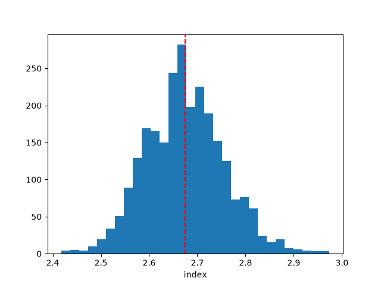
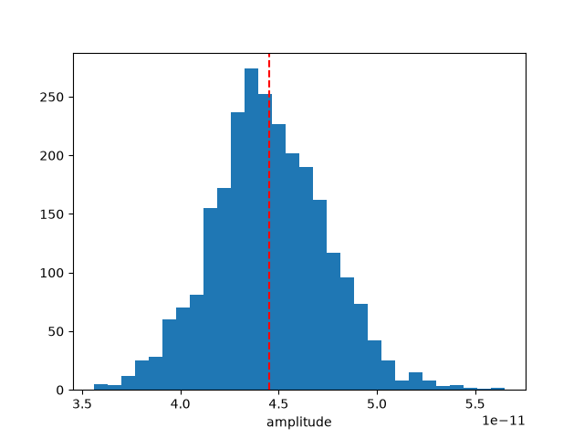
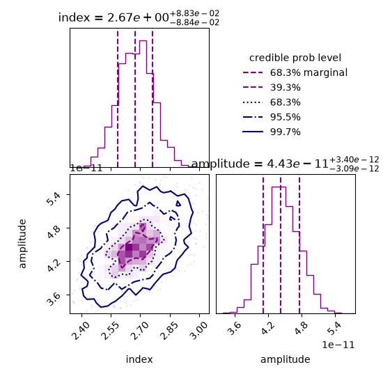
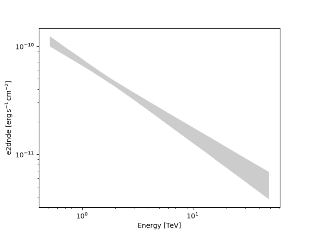
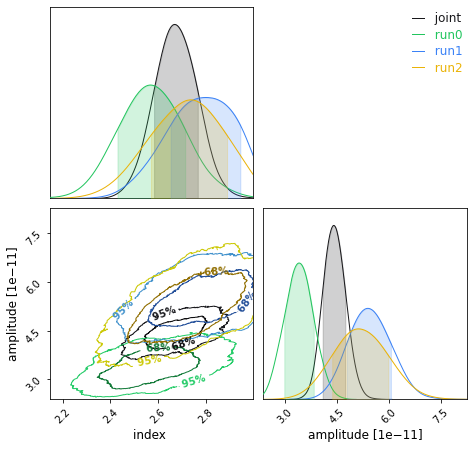
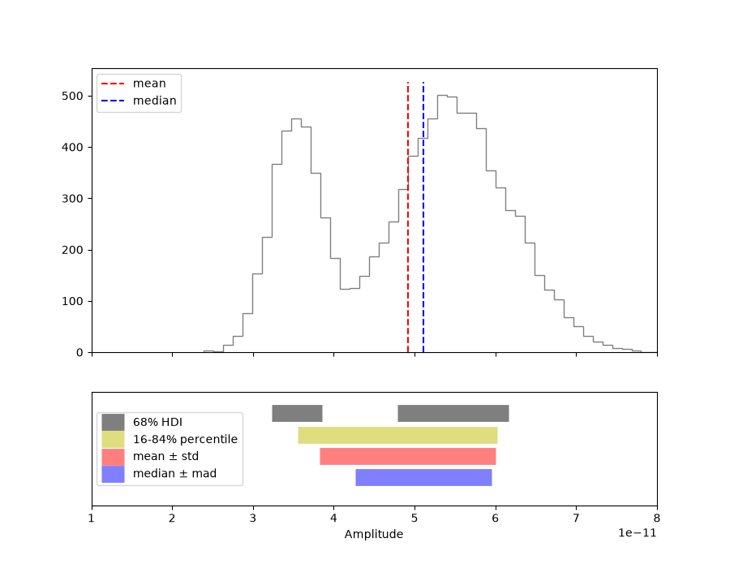

Note
Go to the end to download the full example code or to run this example in your browser via Binder.
Bayesian analysis with nested sampling#
A demonstration of a Bayesian analysis using the nested sampling technique.
Context#
1. Bayesian analysis#
Bayesian inference uses prior knowledge, in the form of a prior distribution, in order to estimate posterior probabilities which we traditionally visualise in the form of corner plots. These distributions contain more information than a maximum likelihood fit as they reveal not only the “best model” but provide a more accurate representation of errors and correlation between parameters. In particular, non-Gaussian degeneracies are complex to estimate with a maximum likelihood approach.
2. Limitations of the Markov Chain Monte Carlo approach#
A well-known approach to estimate this posterior distribution is the Markov Chain Monte Carlo (MCMC). This uses an ensemble of walkers to produce a chain of samples that after a convergence period will reach a stationary state. Once convergence is reached, the successive elements of the chain are samples of the target posterior distribution. However, the weakness of the MCMC approach lies in the “Once convergence” part. If the walkers are started far from the best likelihood region, the convergence time can be long or never reached if the walkers fall in a local minima. The choice of the initialisation point can become critical for complex models with a high number of dimensions and the ability of these walkers to escape a local minimum or to accurately describe a complex likelihood space is not guaranteed.
3. Nested sampling approach#
To overcome these issues, the nested sampling (NS) algorithm has gained traction in physics and astronomy. It is a Monte Carlo algorithm for computing an integral of the likelihood function over the prior model parameter space introduced in Skilling, 2004. The method performs this integral by evolving a collection of points through the parameter space (see recent reviews from Ashton et al., 2022, and Buchner, 2023). Without going into too many details, one important specificity of the NS method is that it starts from the entire parameter space and evolves a collection of live points to map all minima (including multiple modes if any), whereas Markov Chain Monte Carlo methods require an initialisation point and the walkers will explore the local likelihood. The ability of these walkers to escape a local minimum or to accurately describe a complex likelihood space is not guaranteed. This is a fundamental difference with MCMC or Minuit which will only ever probe the vicinity along their minimisation paths and do not have an overview of the global likelihood landscape. The analysis using the NS framework is more CPU time consuming than a standard classical fit, but it provides the full posterior distribution for all parameters, which is out of reach with traditional fitting techniques (N*(N-1)/2 contour plots to generate). In addition, it is more robust to the choice of initialisation, requires less human intervention and is therefore readily integrated in pipeline analysis. In Gammapy, we used the NS implementation of the UltraNest package (see here for more information), one of the leading package in Astronomy (already used in Cosmology and in X-rays). For a nice visualisation of the NS method see here : sampling visualisation. And for a tutorial of UltraNest applied to X-ray fitting with concrete examples and questions see : BXA Tutorial.
Note: please cite UltraNest if used for a paper
If you are using the “UltraNest” library for a paper, please follow its citation scheme: Cite UltraNest.
Proposed approach#
In this example, we will perform a Bayesian analysis with multiple 1D spectra of the Crab nebula data and investigate their posterior distributions.
Setup#
As usual, we’ll start with some setup …
import matplotlib.pyplot as plt
import numpy as np
import astropy.units as u
from gammapy.datasets import Datasets
from gammapy.datasets import SpectrumDatasetOnOff
from gammapy.modeling.models import (
SkyModel,
UniformPrior,
LogUniformPrior,
)
from gammapy.modeling.sampler import Sampler
Loading the spectral datasets#
Here we will load a few Crab 1D spectral data for which we will do a fit.
Model definition#
Now we want to define the spectral model that will be fitted to the data. The Crab spectra will be fitted here with a simple powerlaw for simplicity.
model = SkyModel.create(spectral_model="pl", name="crab")
Warning
Priors definition: Unlike a traditional fit where priors on the parameters are optional, here it is inherent to the Bayesian approach and are therefore mandatory.
In this case we will set (min,max) prior that will define the
boundaries in which the sampling will be performed.
Note that it is usually recommended to use a LogUniformPrior for
the parameters that have a large amplitude range like the
amplitude parameter.
A UniformPrior means that the samples will be drawn with uniform
probability between the (min,max) values in the linear or log space
in the case of a LogUniformPrior.
model.spectral_model.amplitude.prior = LogUniformPrior(min=1e-12, max=1e-10)
model.spectral_model.index.prior = UniformPrior(min=1, max=5)
datasets.models = [model]
print(datasets.models)
DatasetModels
Component 0: SkyModel
Name : crab
Datasets names : None
Spectral model type : PowerLawSpectralModel
Spatial model type :
Temporal model type :
Parameters:
index : 2.000 +/- 0.00
amplitude : 1.00e-12 +/- 0.0e+00 1 / (TeV s cm2)
reference (frozen): 1.000 TeV
Defining the sampler and options#
As for the Fit object, the Sampler object can receive
different backend (although just one is available for now).
The Sampler comes with “reasonable” default parameters, but you can
change them via the sampler_opts dictionary.
Here is a short description of the most relevant parameters that you
could change :
live_points: minimum number of live points throughout the run. More points allow to discover multiple peaks if existing, but is slower. To test the Prior boundaries and for debugging, a lower number (~100) can be used before a production run with more points (~400 or more).frac_remain: the cut-off condition for the integration, set by the maximum allowed fraction of posterior mass left in the live points vs the dead points. High values (e.g., 0.5) are faster and can be used if the posterior distribution is a relatively simple shape. A low value (1e-1, 1e-2) is optimal for finding peaks, but slower.log_dir: directory where the output files will be stored. If set to None, no files will be written. If set to a string, a directory will be created containing the ongoing status of the run and final results. For time consuming analysis, it is highly recommended to use that option to monitor the run and restart it in case of a crash (withresume=True).
Important note: unlike the MCMC method, you don’t need to define the number of steps for which the sampler will run. The algorithm will automatically stop once a convergence criteria has been reached.
sampler_opts = {
"live_points": 300,
"frac_remain": 0.3,
"log_dir": None,
}
sampler = Sampler(backend="ultranest", sampler_opts=sampler_opts)
Next we can run the sampler on a given dataset. No options are accepted in the run method.
[ultranest] Sampling 300 live points from prior ...
Mono-modal Volume: ~exp(-4.07) * Expected Volume: exp(0.00) Quality: ok
index : +1.0|************************************************| +5.0
amplitude: +1.0e-12|************************ *************** *** ***| +1.0e-10
Z=-inf(0.00%) | Like=-4025.79..-60.15 [-4025.7850..-346.3383] | it/evals=0/301 eff=0.0000% N=300
Z=-555.1(0.00%) | Like=-549.40..-60.15 [-4025.7850..-346.3383] | it/evals=20/322 eff=90.9091% N=300
Z=-542.2(0.00%) | Like=-536.76..-60.15 [-4025.7850..-346.3383] | it/evals=30/332 eff=93.7500% N=300
Z=-525.1(0.00%) | Like=-519.26..-60.15 [-4025.7850..-346.3383] | it/evals=49/353 eff=92.4528% N=300
Z=-509.2(0.00%) | Like=-503.24..-60.15 [-4025.7850..-346.3383] | it/evals=60/364 eff=93.7500% N=300
Mono-modal Volume: ~exp(-4.15) * Expected Volume: exp(-0.22) Quality: ok
index : +1.0|************************************************| +5.0
amplitude: +1.0e-12|**************************************** *** ***| +1.0e-10
Z=-504.4(0.00%) | Like=-497.93..-60.15 [-4025.7850..-346.3383] | it/evals=67/372 eff=93.0556% N=300
Z=-478.7(0.00%) | Like=-472.06..-60.15 [-4025.7850..-346.3383] | it/evals=85/393 eff=91.3978% N=300
Z=-475.4(0.00%) | Like=-469.75..-60.15 [-4025.7850..-346.3383] | it/evals=90/400 eff=90.0000% N=300
Z=-458.0(0.00%) | Like=-451.17..-60.15 [-4025.7850..-346.3383] | it/evals=106/421 eff=87.6033% N=300
Z=-433.6(0.00%) | Like=-426.40..-60.15 [-4025.7850..-346.3383] | it/evals=120/441 eff=85.1064% N=300
Mono-modal Volume: ~exp(-4.15) Expected Volume: exp(-0.45) Quality: ok
index : +1.0|************************************************| +5.0
amplitude: +1.0e-12|**************************************** *******| +1.0e-10
Z=-417.3(0.00%) | Like=-410.77..-60.15 [-4025.7850..-346.3383] | it/evals=136/460 eff=85.0000% N=300
Z=-401.3(0.00%) | Like=-393.73..-60.15 [-4025.7850..-346.3383] | it/evals=150/476 eff=85.2273% N=300
Z=-387.4(0.00%) | Like=-381.84..-60.15 [-4025.7850..-346.3383] | it/evals=169/497 eff=85.7868% N=300
Z=-377.4(0.00%) | Like=-372.25..-60.15 [-4025.7850..-346.3383] | it/evals=180/513 eff=84.5070% N=300
Z=-353.6(0.00%) | Like=-347.56..-60.15 [-4025.7850..-346.3383] | it/evals=198/536 eff=83.8983% N=300
Mono-modal Volume: ~exp(-4.31) * Expected Volume: exp(-0.67) Quality: ok
index : +1.0| **********************************************| +5.0
amplitude: +1.0e-12| *************************************** *******| +1.0e-10
Z=-350.4(0.00%) | Like=-343.76..-60.15 [-345.1147..-193.1174] | it/evals=201/539 eff=84.1004% N=300
Z=-337.4(0.00%) | Like=-330.24..-60.15 [-345.1147..-193.1174] | it/evals=210/550 eff=84.0000% N=300
Z=-317.4(0.00%) | Like=-311.50..-60.15 [-345.1147..-193.1174] | it/evals=228/572 eff=83.8235% N=300
Z=-302.3(0.00%) | Like=-295.84..-60.15 [-345.1147..-193.1174] | it/evals=240/590 eff=82.7586% N=300
Z=-296.2(0.00%) | Like=-290.25..-60.15 [-345.1147..-193.1174] | it/evals=253/612 eff=81.0897% N=300
Mono-modal Volume: ~exp(-4.31) Expected Volume: exp(-0.89) Quality: ok
index : +1.0| ********************************************| +5.0
amplitude: +1.0e-12| **********************************************| +1.0e-10
Z=-282.8(0.00%) | Like=-274.66..-60.15 [-345.1147..-193.1174] | it/evals=268/632 eff=80.7229% N=300
Z=-279.1(0.00%) | Like=-272.46..-60.15 [-345.1147..-193.1174] | it/evals=270/637 eff=80.1187% N=300
Z=-270.7(0.00%) | Like=-264.81..-60.15 [-345.1147..-193.1174] | it/evals=281/658 eff=78.4916% N=300
Z=-257.0(0.00%) | Like=-250.84..-60.15 [-345.1147..-193.1174] | it/evals=295/680 eff=77.6316% N=300
Z=-254.8(0.00%) | Like=-248.88..-60.15 [-345.1147..-193.1174] | it/evals=300/689 eff=77.1208% N=300
Z=-240.8(0.00%) | Like=-234.63..-59.58 [-345.1147..-193.1174] | it/evals=314/710 eff=76.5854% N=300
Z=-235.2(0.00%) | Like=-229.08..-59.58 [-345.1147..-193.1174] | it/evals=327/732 eff=75.6944% N=300
Z=-234.1(0.00%) | Like=-227.49..-59.58 [-345.1147..-193.1174] | it/evals=330/735 eff=75.8621% N=300
Mono-modal Volume: ~exp(-5.19) * Expected Volume: exp(-1.12) Quality: ok
index : +1.0| ******************************************| +5.0
amplitude: +1.0e-12| ********************************************| +1.0e-10
Z=-230.9(0.00%) | Like=-224.45..-59.58 [-345.1147..-193.1174] | it/evals=335/740 eff=76.1364% N=300
Z=-224.2(0.00%) | Like=-218.35..-59.58 [-345.1147..-193.1174] | it/evals=352/761 eff=76.3557% N=300
Z=-219.9(0.00%) | Like=-213.96..-59.58 [-345.1147..-193.1174] | it/evals=360/771 eff=76.4331% N=300
Z=-211.0(0.00%) | Like=-204.93..-59.58 [-345.1147..-193.1174] | it/evals=375/793 eff=76.0649% N=300
Z=-205.5(0.00%) | Like=-199.22..-59.47 [-345.1147..-193.1174] | it/evals=390/812 eff=76.1719% N=300
Mono-modal Volume: ~exp(-5.19) Expected Volume: exp(-1.34) Quality: ok
index : +1.0| *****************************************| +5.0
amplitude: +1.0e-12| ***************************************** **| +1.0e-10
Z=-199.7(0.00%) | Like=-193.46..-59.47 [-345.1147..-193.1174] | it/evals=405/831 eff=76.2712% N=300
Z=-194.9(0.00%) | Like=-189.42..-59.47 [-193.0427..-143.8486] | it/evals=420/850 eff=76.3636% N=300
Z=-191.6(0.00%) | Like=-185.23..-59.47 [-193.0427..-143.8486] | it/evals=434/872 eff=75.8741% N=300
Z=-187.2(0.00%) | Like=-181.47..-59.47 [-193.0427..-143.8486] | it/evals=448/893 eff=75.5481% N=300
Z=-186.8(0.00%) | Like=-181.09..-59.47 [-193.0427..-143.8486] | it/evals=450/896 eff=75.5034% N=300
Z=-182.2(0.00%) | Like=-176.33..-59.47 [-193.0427..-143.8486] | it/evals=468/917 eff=75.8509% N=300
Mono-modal Volume: ~exp(-5.59) * Expected Volume: exp(-1.56) Quality: ok
index : +1.0| ************************************* | +5.0
amplitude: +1.0e-12| **************************************** **| +1.0e-10
Z=-182.0(0.00%) | Like=-175.58..-59.47 [-193.0427..-143.8486] | it/evals=469/918 eff=75.8900% N=300
Z=-179.6(0.00%) | Like=-173.84..-59.47 [-193.0427..-143.8486] | it/evals=480/929 eff=76.3116% N=300
Z=-176.3(0.00%) | Like=-169.66..-59.02 [-193.0427..-143.8486] | it/evals=492/950 eff=75.6923% N=300
Z=-171.1(0.00%) | Like=-165.14..-59.02 [-193.0427..-143.8486] | it/evals=508/971 eff=75.7079% N=300
Z=-170.7(0.00%) | Like=-164.92..-59.02 [-193.0427..-143.8486] | it/evals=510/973 eff=75.7801% N=300
Z=-166.7(0.00%) | Like=-160.44..-59.02 [-193.0427..-143.8486] | it/evals=525/994 eff=75.6484% N=300
Mono-modal Volume: ~exp(-5.89) * Expected Volume: exp(-1.79) Quality: ok
index : +1.0| ********************************* | +5.0
amplitude: +1.0e-12| *************************************** **| +1.0e-10
Z=-163.3(0.00%) | Like=-157.18..-59.02 [-193.0427..-143.8486] | it/evals=536/1011 eff=75.3868% N=300
Z=-162.4(0.00%) | Like=-156.16..-59.02 [-193.0427..-143.8486] | it/evals=540/1020 eff=75.0000% N=300
Z=-158.4(0.00%) | Like=-152.89..-59.02 [-193.0427..-143.8486] | it/evals=556/1041 eff=75.0337% N=300
Z=-156.6(0.00%) | Like=-150.80..-59.02 [-193.0427..-143.8486] | it/evals=570/1058 eff=75.1979% N=300
Z=-152.5(0.00%) | Like=-146.17..-59.02 [-193.0427..-143.8486] | it/evals=590/1078 eff=75.8355% N=300
Z=-150.5(0.00%) | Like=-144.55..-59.02 [-193.0427..-143.8486] | it/evals=600/1095 eff=75.4717% N=300
Mono-modal Volume: ~exp(-5.94) * Expected Volume: exp(-2.01) Quality: ok
index : +1.0| ****************************** | +5.0
amplitude: +1.0e-12| ************************************** | +1.0e-10
Z=-150.0(0.00%) | Like=-143.87..-59.02 [-193.0427..-143.8486] | it/evals=603/1098 eff=75.5639% N=300
Z=-147.6(0.00%) | Like=-140.79..-59.02 [-143.8457..-105.7952] | it/evals=617/1119 eff=75.3358% N=300
Z=-145.2(0.00%) | Like=-139.51..-59.02 [-143.8457..-105.7952] | it/evals=630/1133 eff=75.6303% N=300
Z=-142.5(0.00%) | Like=-135.78..-59.02 [-143.8457..-105.7952] | it/evals=642/1155 eff=75.0877% N=300
Z=-137.9(0.00%) | Like=-131.11..-59.02 [-143.8457..-105.7952] | it/evals=660/1176 eff=75.3425% N=300
Mono-modal Volume: ~exp(-6.13) * Expected Volume: exp(-2.23) Quality: ok
index : +1.0| ************************** +4.0 | +5.0
amplitude: +1.0e-12| ************************************ | +1.0e-10
Z=-135.3(0.00%) | Like=-128.75..-59.02 [-143.8457..-105.7952] | it/evals=670/1190 eff=75.2809% N=300
Z=-131.9(0.00%) | Like=-125.58..-59.02 [-143.8457..-105.7952] | it/evals=684/1211 eff=75.0823% N=300
Z=-130.8(0.00%) | Like=-124.67..-59.02 [-143.8457..-105.7952] | it/evals=690/1219 eff=75.0816% N=300
Z=-128.3(0.00%) | Like=-121.54..-59.02 [-143.8457..-105.7952] | it/evals=705/1240 eff=75.0000% N=300
Z=-125.2(0.00%) | Like=-118.71..-59.02 [-143.8457..-105.7952] | it/evals=720/1261 eff=74.9220% N=300
Z=-122.6(0.00%) | Like=-116.02..-59.02 [-143.8457..-105.7952] | it/evals=734/1282 eff=74.7454% N=300
Mono-modal Volume: ~exp(-6.26) * Expected Volume: exp(-2.46) Quality: ok
index : +1.0| +1.9 *********************** +3.8 | +5.0
amplitude: +1.0e-12| ******************************* | +1.0e-10
Z=-122.0(0.00%) | Like=-115.66..-59.02 [-143.8457..-105.7952] | it/evals=737/1288 eff=74.5951% N=300
Z=-120.1(0.00%) | Like=-113.85..-59.02 [-143.8457..-105.7952] | it/evals=750/1310 eff=74.2574% N=300
Z=-117.7(0.00%) | Like=-111.41..-59.02 [-143.8457..-105.7952] | it/evals=765/1334 eff=73.9845% N=300
Z=-115.7(0.00%) | Like=-109.51..-58.94 [-143.8457..-105.7952] | it/evals=780/1353 eff=74.0741% N=300
Z=-114.9(0.00%) | Like=-108.72..-58.94 [-143.8457..-105.7952] | it/evals=788/1375 eff=73.3023% N=300
Z=-112.9(0.00%) | Like=-105.94..-58.94 [-143.8457..-105.7952] | it/evals=799/1399 eff=72.7025% N=300
Mono-modal Volume: ~exp(-6.70) * Expected Volume: exp(-2.68) Quality: ok
index : +1.0| +2.0 ********************** +3.7 | +5.0
amplitude: +1.0e-12| ****************************** | +1.0e-10
Z=-111.9(0.00%) | Like=-105.33..-58.94 [-105.6550..-81.4728] | it/evals=804/1405 eff=72.7602% N=300
Z=-111.0(0.00%) | Like=-104.41..-58.94 [-105.6550..-81.4728] | it/evals=810/1412 eff=72.8417% N=300
Z=-109.0(0.00%) | Like=-102.49..-58.94 [-105.6550..-81.4728] | it/evals=826/1433 eff=72.9038% N=300
Z=-107.5(0.00%) | Like=-100.76..-58.94 [-105.6550..-81.4728] | it/evals=840/1452 eff=72.9167% N=300
Z=-105.2(0.00%) | Like=-98.72..-58.94 [-105.6550..-81.4728] | it/evals=858/1474 eff=73.0835% N=300
Z=-103.8(0.00%) | Like=-96.87..-58.94 [-105.6550..-81.4728] | it/evals=870/1492 eff=72.9866% N=300
Mono-modal Volume: ~exp(-6.93) * Expected Volume: exp(-2.90) Quality: ok
index : +1.0| +2.1 ******************* +3.5 | +5.0
amplitude: +1.0e-12| ************************** +7.5e-11 | +1.0e-10
Z=-103.6(0.00%) | Like=-96.57..-58.94 [-105.6550..-81.4728] | it/evals=871/1493 eff=73.0092% N=300
Z=-101.5(0.00%) | Like=-94.98..-58.94 [-105.6550..-81.4728] | it/evals=887/1514 eff=73.0643% N=300
Z=-99.8(0.00%) | Like=-92.85..-58.94 [-105.6550..-81.4728] | it/evals=900/1529 eff=73.2303% N=300
Z=-97.9(0.00%) | Like=-91.44..-58.94 [-105.6550..-81.4728] | it/evals=917/1551 eff=73.3014% N=300
Z=-96.6(0.00%) | Like=-89.97..-58.94 [-105.6550..-81.4728] | it/evals=930/1565 eff=73.5178% N=300
Mono-modal Volume: ~exp(-6.93) * Expected Volume: exp(-3.13) Quality: ok
index : +1.0| +2.1 ***************** +3.4 | +5.0
amplitude: +1.0e-12| +2.5e-11 ************************ +7.2e-11 | +1.0e-10
Z=-95.7(0.00%) | Like=-88.81..-58.94 [-105.6550..-81.4728] | it/evals=938/1580 eff=73.2812% N=300
Z=-94.2(0.00%) | Like=-87.97..-58.89 [-105.6550..-81.4728] | it/evals=954/1601 eff=73.3282% N=300
Z=-93.8(0.00%) | Like=-87.62..-58.89 [-105.6550..-81.4728] | it/evals=960/1608 eff=73.3945% N=300
Z=-92.4(0.00%) | Like=-85.60..-58.89 [-105.6550..-81.4728] | it/evals=975/1629 eff=73.3634% N=300
Z=-90.6(0.00%) | Like=-83.89..-58.89 [-105.6550..-81.4728] | it/evals=990/1648 eff=73.4421% N=300
Z=-89.2(0.00%) | Like=-82.20..-58.89 [-105.6550..-81.4728] | it/evals=1003/1669 eff=73.2652% N=300
Mono-modal Volume: ~exp(-6.94) * Expected Volume: exp(-3.35) Quality: ok
index : +1.0| +2.2 *************** +3.3 | +5.0
amplitude: +1.0e-12| +2.7e-11 ********************* +6.8e-11 | +1.0e-10
Z=-89.0(0.00%) | Like=-82.08..-58.89 [-105.6550..-81.4728] | it/evals=1005/1671 eff=73.3042% N=300
Z=-87.6(0.00%) | Like=-80.93..-58.89 [-81.4619..-70.5613] | it/evals=1020/1688 eff=73.4870% N=300
Z=-86.2(0.00%) | Like=-79.57..-58.89 [-81.4619..-70.5613] | it/evals=1037/1710 eff=73.5461% N=300
Z=-85.5(0.00%) | Like=-78.89..-58.89 [-81.4619..-70.5613] | it/evals=1048/1736 eff=72.9805% N=300
Z=-85.3(0.00%) | Like=-78.86..-58.89 [-81.4619..-70.5613] | it/evals=1050/1738 eff=73.0181% N=300
Z=-84.5(0.00%) | Like=-78.02..-58.89 [-81.4619..-70.5613] | it/evals=1065/1759 eff=72.9952% N=300
Mono-modal Volume: ~exp(-7.24) * Expected Volume: exp(-3.57) Quality: ok
index : +1.0| +2.2 ************* +3.2 | +5.0
amplitude: +1.0e-12| +2.8e-11 ******************* +6.5e-11 | +1.0e-10
Z=-84.0(0.00%) | Like=-77.34..-58.89 [-81.4619..-70.5613] | it/evals=1072/1768 eff=73.0245% N=300
Z=-83.4(0.00%) | Like=-76.68..-58.89 [-81.4619..-70.5613] | it/evals=1080/1778 eff=73.0717% N=300
Z=-82.4(0.00%) | Like=-75.76..-58.89 [-81.4619..-70.5613] | it/evals=1095/1801 eff=72.9514% N=300
Z=-81.5(0.00%) | Like=-74.91..-58.84 [-81.4619..-70.5613] | it/evals=1110/1818 eff=73.1225% N=300
Z=-81.0(0.00%) | Like=-74.53..-58.84 [-81.4619..-70.5613] | it/evals=1119/1840 eff=72.6623% N=300
Z=-80.3(0.00%) | Like=-73.89..-58.84 [-81.4619..-70.5613] | it/evals=1134/1862 eff=72.5992% N=300
Mono-modal Volume: ~exp(-7.39) * Expected Volume: exp(-3.80) Quality: ok
index : +1.0| +2.3 ************ +3.2 | +5.0
amplitude: +1.0e-12| +3.0e-11 ***************** +6.2e-11 | +1.0e-10
Z=-80.1(0.00%) | Like=-73.70..-58.84 [-81.4619..-70.5613] | it/evals=1139/1868 eff=72.6403% N=300
Z=-80.1(0.00%) | Like=-73.70..-58.84 [-81.4619..-70.5613] | it/evals=1140/1869 eff=72.6577% N=300
Z=-79.4(0.00%) | Like=-72.88..-58.84 [-81.4619..-70.5613] | it/evals=1155/1891 eff=72.5959% N=300
Z=-78.7(0.00%) | Like=-72.17..-58.84 [-81.4619..-70.5613] | it/evals=1170/1910 eff=72.6708% N=300
Z=-77.9(0.00%) | Like=-71.19..-58.84 [-81.4619..-70.5613] | it/evals=1187/1931 eff=72.7774% N=300
Z=-77.3(0.00%) | Like=-70.57..-58.84 [-81.4619..-70.5613] | it/evals=1197/1953 eff=72.4138% N=300
Z=-77.2(0.00%) | Like=-70.53..-58.84 [-70.5579..-65.6635] | it/evals=1200/1957 eff=72.4200% N=300
Mono-modal Volume: ~exp(-7.67) * Expected Volume: exp(-4.02) Quality: ok
index : +1.0| +2.3 *********** +3.1 | +5.0
amplitude: +1.0e-12| +3.2e-11 *************** +6.0e-11 | +1.0e-10
Z=-76.9(0.00%) | Like=-70.23..-58.84 [-70.5579..-65.6635] | it/evals=1206/1965 eff=72.4324% N=300
Z=-76.3(0.00%) | Like=-69.71..-58.84 [-70.5579..-65.6635] | it/evals=1221/1986 eff=72.4199% N=300
Z=-75.9(0.00%) | Like=-69.58..-58.80 [-70.5579..-65.6635] | it/evals=1230/2001 eff=72.3104% N=300
Z=-75.5(0.00%) | Like=-69.16..-58.80 [-70.5579..-65.6635] | it/evals=1243/2022 eff=72.1835% N=300
Z=-75.2(0.00%) | Like=-68.70..-58.80 [-70.5579..-65.6635] | it/evals=1255/2044 eff=71.9610% N=300
Z=-75.0(0.01%) | Like=-68.58..-58.80 [-70.5579..-65.6635] | it/evals=1260/2055 eff=71.7949% N=300
Mono-modal Volume: ~exp(-8.22) * Expected Volume: exp(-4.24) Quality: ok
index : +1.0| +2.3 ********* +3.1 | +5.0
amplitude: +1.0e-12| +3.3e-11 ************** +5.9e-11 | +1.0e-10
Z=-74.6(0.01%) | Like=-68.23..-58.80 [-70.5579..-65.6635] | it/evals=1273/2075 eff=71.7183% N=300
Z=-74.1(0.01%) | Like=-67.51..-58.80 [-70.5579..-65.6635] | it/evals=1290/2097 eff=71.7863% N=300
Z=-73.7(0.02%) | Like=-67.17..-58.80 [-70.5579..-65.6635] | it/evals=1305/2119 eff=71.7427% N=300
Z=-73.3(0.03%) | Like=-66.86..-58.80 [-70.5579..-65.6635] | it/evals=1320/2138 eff=71.8172% N=300
Z=-72.9(0.05%) | Like=-66.38..-58.80 [-70.5579..-65.6635] | it/evals=1335/2159 eff=71.8128% N=300
Mono-modal Volume: ~exp(-8.22) Expected Volume: exp(-4.47) Quality: ok
index : +1.0| +2.4 ********* +3.0 | +5.0
amplitude: +1.0e-12| +3.4e-11 ************* +5.7e-11 | +1.0e-10
Z=-72.5(0.07%) | Like=-66.10..-58.80 [-70.5579..-65.6635] | it/evals=1349/2179 eff=71.7935% N=300
Z=-72.5(0.07%) | Like=-66.07..-58.80 [-70.5579..-65.6635] | it/evals=1350/2180 eff=71.8085% N=300
Z=-72.2(0.10%) | Like=-65.81..-58.80 [-70.5579..-65.6635] | it/evals=1366/2201 eff=71.8569% N=300
Z=-71.9(0.13%) | Like=-65.57..-58.80 [-65.6452..-65.1626] | it/evals=1380/2218 eff=71.9499% N=300
Z=-71.6(0.17%) | Like=-65.25..-58.80 [-65.6452..-65.1626] | it/evals=1394/2239 eff=71.8927% N=300
Mono-modal Volume: ~exp(-8.25) * Expected Volume: exp(-4.69) Quality: ok
index : +1.0| +2.4 ******** +3.0 | +5.0
amplitude: +1.0e-12| +3.5e-11 *********** +5.5e-11 | +1.0e-10
Z=-71.4(0.22%) | Like=-64.93..-58.80 [-64.9803..-64.9252] | it/evals=1407/2260 eff=71.7857% N=300
Z=-71.3(0.23%) | Like=-64.90..-58.80 [-64.8969..-64.8832] | it/evals=1410/2264 eff=71.7923% N=300
Z=-71.0(0.31%) | Like=-64.54..-58.80 [-64.5491..-64.5371] | it/evals=1427/2286 eff=71.8530% N=300
Z=-70.8(0.41%) | Like=-64.25..-58.80 [-64.2463..-64.2381]*| it/evals=1440/2306 eff=71.7846% N=300
Z=-70.5(0.52%) | Like=-63.92..-58.80 [-63.9357..-63.9237] | it/evals=1454/2328 eff=71.6963% N=300
Z=-70.3(0.63%) | Like=-63.71..-58.80 [-63.7133..-63.7056]*| it/evals=1465/2350 eff=71.4634% N=300
Z=-70.2(0.69%) | Like=-63.65..-58.80 [-63.6491..-63.6373] | it/evals=1470/2359 eff=71.3939% N=300
Mono-modal Volume: ~exp(-8.98) * Expected Volume: exp(-4.91) Quality: ok
index : +1.0| +2.4 ******* +2.9 | +5.0
amplitude: +1.0e-12| +3.6e-11 ********** +5.4e-11 | +1.0e-10
Z=-70.1(0.74%) | Like=-63.57..-58.80 [-63.5678..-63.5276] | it/evals=1474/2363 eff=71.4493% N=300
Z=-69.8(1.02%) | Like=-63.26..-58.80 [-63.2625..-63.2061] | it/evals=1493/2384 eff=71.6411% N=300
Z=-69.7(1.15%) | Like=-63.08..-58.80 [-63.0910..-63.0767] | it/evals=1500/2395 eff=71.5990% N=300
Z=-69.4(1.48%) | Like=-62.88..-58.80 [-62.8959..-62.8814] | it/evals=1517/2416 eff=71.6919% N=300
Z=-69.2(1.79%) | Like=-62.60..-58.78 [-62.6003..-62.5883] | it/evals=1530/2430 eff=71.8310% N=300
Mono-modal Volume: ~exp(-8.98) Expected Volume: exp(-5.14) Quality: ok
index : +1.0| +2.5 ****** +2.9 | +5.0
amplitude: +1.0e-12| +3.7e-11 ********* +5.3e-11 | +1.0e-10
Z=-69.1(2.08%) | Like=-62.48..-58.78 [-62.4801..-62.4730]*| it/evals=1541/2449 eff=71.7078% N=300
Z=-68.9(2.49%) | Like=-62.33..-58.78 [-62.3267..-62.3246]*| it/evals=1556/2470 eff=71.7051% N=300
Z=-68.8(2.62%) | Like=-62.24..-58.78 [-62.2576..-62.2384] | it/evals=1560/2480 eff=71.5596% N=300
Z=-68.7(2.99%) | Like=-62.07..-58.78 [-62.0673..-62.0531] | it/evals=1571/2501 eff=71.3766% N=300
Z=-68.5(3.58%) | Like=-61.92..-58.78 [-61.9236..-61.8691] | it/evals=1585/2522 eff=71.3321% N=300
Z=-68.4(3.80%) | Like=-61.84..-58.75 [-61.8445..-61.8425]*| it/evals=1590/2530 eff=71.3004% N=300
Z=-68.3(4.55%) | Like=-61.71..-58.75 [-61.7084..-61.7055]*| it/evals=1605/2551 eff=71.3016% N=300
Mono-modal Volume: ~exp(-8.98) Expected Volume: exp(-5.36) Quality: ok
index : +1.0| +2.5 ****** +2.9 | +5.0
amplitude: +1.0e-12| +3.8e-11 ******** +5.2e-11 | +1.0e-10
Z=-68.2(5.05%) | Like=-61.64..-58.75 [-61.6595..-61.6365] | it/evals=1614/2571 eff=71.0700% N=300
Z=-68.1(5.40%) | Like=-61.61..-58.75 [-61.6054..-61.6050]*| it/evals=1620/2581 eff=71.0215% N=300
Z=-68.0(6.27%) | Like=-61.45..-58.75 [-61.4521..-61.4394] | it/evals=1636/2602 eff=71.0686% N=300
Z=-67.8(6.98%) | Like=-61.33..-58.75 [-61.3288..-61.3246]*| it/evals=1649/2623 eff=70.9858% N=300
Z=-67.8(7.06%) | Like=-61.32..-58.75 [-61.3246..-61.3145] | it/evals=1650/2624 eff=70.9983% N=300
Z=-67.7(8.06%) | Like=-61.19..-58.75 [-61.2100..-61.1880] | it/evals=1665/2645 eff=71.0021% N=300
Mono-modal Volume: ~exp(-9.66) * Expected Volume: exp(-5.58) Quality: ok
index : +1.0| +2.5 ****** +2.8 | +5.0
amplitude: +1.0e-12| +3.8e-11 ******* +5.1e-11 | +1.0e-10
Z=-67.6(8.80%) | Like=-61.10..-58.75 [-61.1122..-61.1011] | it/evals=1675/2664 eff=70.8545% N=300
Z=-67.6(9.14%) | Like=-61.04..-58.75 [-61.0623..-61.0363] | it/evals=1680/2672 eff=70.8263% N=300
Z=-67.4(10.62%) | Like=-60.89..-58.75 [-60.8914..-60.8890]*| it/evals=1700/2694 eff=71.0109% N=300
Z=-67.3(11.52%) | Like=-60.80..-58.75 [-60.8036..-60.8017]*| it/evals=1710/2707 eff=71.0428% N=300
Z=-67.2(12.87%) | Like=-60.70..-58.75 [-60.6969..-60.6926]*| it/evals=1725/2728 eff=71.0461% N=300
Z=-67.1(14.41%) | Like=-60.54..-58.75 [-60.5435..-60.5428]*| it/evals=1740/2748 eff=71.0784% N=300
Mono-modal Volume: ~exp(-9.79) * Expected Volume: exp(-5.81) Quality: ok
index : +1.0| +2.5 **** +2.8 | +5.0
amplitude: +1.0e-12| +3.9e-11 ****** +5.0e-11 | +1.0e-10
Z=-67.1(14.60%) | Like=-60.53..-58.75 [-60.5344..-60.5335]*| it/evals=1742/2750 eff=71.1020% N=300
Z=-67.0(16.35%) | Like=-60.46..-58.75 [-60.4559..-60.4536]*| it/evals=1759/2771 eff=71.1858% N=300
Z=-66.9(17.48%) | Like=-60.41..-58.75 [-60.4093..-60.4045]*| it/evals=1770/2787 eff=71.1701% N=300
Z=-66.8(19.15%) | Like=-60.32..-58.75 [-60.3198..-60.3137]*| it/evals=1786/2808 eff=71.2121% N=300
Z=-66.7(20.79%) | Like=-60.23..-58.75 [-60.2256..-60.2253]*| it/evals=1800/2825 eff=71.2871% N=300
Mono-modal Volume: ~exp(-9.98) * Expected Volume: exp(-6.03) Quality: ok
index : +1.0| +2.5 **** +2.8 | +5.0
amplitude: +1.0e-12| +3.9e-11 ****** +5.0e-11 | +1.0e-10
Z=-66.7(21.88%) | Like=-60.16..-58.75 [-60.1637..-60.1633]*| it/evals=1809/2840 eff=71.2205% N=300
Z=-66.6(23.99%) | Like=-60.10..-58.75 [-60.1004..-60.0979]*| it/evals=1826/2861 eff=71.3003% N=300
Z=-66.6(24.40%) | Like=-60.09..-58.75 [-60.0911..-60.0809] | it/evals=1830/2868 eff=71.2617% N=300
Z=-66.5(26.35%) | Like=-60.00..-58.75 [-59.9988..-59.9867] | it/evals=1847/2889 eff=71.3403% N=300
Z=-66.4(27.89%) | Like=-59.95..-58.75 [-59.9452..-59.9435]*| it/evals=1860/2903 eff=71.4560% N=300
Z=-66.4(29.41%) | Like=-59.90..-58.75 [-59.9019..-59.8915] | it/evals=1873/2924 eff=71.3796% N=300
Mono-modal Volume: ~exp(-10.09) * Expected Volume: exp(-6.25) Quality: ok
index : +1.0| +2.5 **** +2.8 | +5.0
amplitude: +1.0e-12| +4.0e-11 ****** +4.9e-11 | +1.0e-10
Z=-66.4(29.76%) | Like=-59.89..-58.75 [-59.8865..-59.8816]*| it/evals=1876/2929 eff=71.3579% N=300
Z=-66.3(31.53%) | Like=-59.82..-58.75 [-59.8238..-59.8217]*| it/evals=1889/2950 eff=71.2830% N=300
Z=-66.3(31.62%) | Like=-59.82..-58.75 [-59.8217..-59.8215]*| it/evals=1890/2951 eff=71.2939% N=300
Z=-66.3(33.62%) | Like=-59.78..-58.75 [-59.7801..-59.7784]*| it/evals=1906/2972 eff=71.3323% N=300
Z=-66.2(35.21%) | Like=-59.73..-58.75 [-59.7299..-59.7299]*| it/evals=1919/2993 eff=71.2588% N=300
Z=-66.2(35.35%) | Like=-59.73..-58.75 [-59.7299..-59.7297]*| it/evals=1920/2995 eff=71.2430% N=300
Z=-66.2(36.88%) | Like=-59.69..-58.75 [-59.6943..-59.6937]*| it/evals=1933/3016 eff=71.1708% N=300
Mono-modal Volume: ~exp(-10.63) * Expected Volume: exp(-6.48) Quality: ok
index : +1.0| +2.6 **** +2.8 | +5.0
amplitude: +1.0e-12| +4.1e-11 ***** +4.9e-11 | +1.0e-10
Z=-66.1(38.11%) | Like=-59.65..-58.75 [-59.6721..-59.6497] | it/evals=1943/3029 eff=71.1982% N=300
Z=-66.1(38.91%) | Like=-59.63..-58.75 [-59.6311..-59.6191] | it/evals=1950/3036 eff=71.2719% N=300
Z=-66.1(40.75%) | Like=-59.59..-58.75 [-59.5900..-59.5878]*| it/evals=1964/3057 eff=71.2369% N=300
Z=-66.0(42.66%) | Like=-59.54..-58.75 [-59.5355..-59.5350]*| it/evals=1980/3079 eff=71.2487% N=300
Z=-66.0(44.49%) | Like=-59.51..-58.75 [-59.5096..-59.5089]*| it/evals=1995/3102 eff=71.1991% N=300
Mono-modal Volume: ~exp(-10.63) Expected Volume: exp(-6.70) Quality: ok
index : +1.0| +2.6 **** +2.8 | +5.0
amplitude: +1.0e-12| +4.1e-11 **** +4.8e-11 | +1.0e-10
Z=-65.9(46.49%) | Like=-59.47..-58.75 [-59.4712..-59.4675]*| it/evals=2010/3122 eff=71.2261% N=300
Z=-65.9(48.42%) | Like=-59.43..-58.75 [-59.4287..-59.4196]*| it/evals=2026/3144 eff=71.2377% N=300
Z=-65.9(49.87%) | Like=-59.40..-58.75 [-59.3970..-59.3932]*| it/evals=2038/3165 eff=71.1344% N=300
Z=-65.8(50.11%) | Like=-59.39..-58.75 [-59.3925..-59.3883]*| it/evals=2040/3168 eff=71.1297% N=300
Z=-65.8(51.67%) | Like=-59.37..-58.75 [-59.3686..-59.3681]*| it/evals=2053/3190 eff=71.0381% N=300
Z=-65.8(53.27%) | Like=-59.34..-58.75 [-59.3383..-59.3346]*| it/evals=2067/3211 eff=71.0065% N=300
Z=-65.8(53.66%) | Like=-59.33..-58.75 [-59.3298..-59.3282]*| it/evals=2070/3215 eff=71.0120% N=300
Mono-modal Volume: ~exp(-10.88) * Expected Volume: exp(-6.92) Quality: ok
index : +1.0| +2.6 **** +2.8 | +5.0
amplitude: +1.0e-12| +4.1e-11 **** +4.8e-11 | +1.0e-10
Z=-65.8(54.46%) | Like=-59.32..-58.75 [-59.3190..-59.3189]*| it/evals=2077/3234 eff=70.7907% N=300
Z=-65.7(55.63%) | Like=-59.31..-58.75 [-59.3091..-59.3091]*| it/evals=2087/3255 eff=70.6261% N=300
Z=-65.7(57.03%) | Like=-59.29..-58.75 [-59.2905..-59.2889]*| it/evals=2100/3273 eff=70.6357% N=300
Z=-65.7(58.57%) | Like=-59.27..-58.75 [-59.2728..-59.2722]*| it/evals=2114/3294 eff=70.6079% N=300
Z=-65.7(60.08%) | Like=-59.25..-58.75 [-59.2468..-59.2430]*| it/evals=2129/3315 eff=70.6136% N=300
Z=-65.7(60.19%) | Like=-59.24..-58.75 [-59.2430..-59.2425]*| it/evals=2130/3316 eff=70.6233% N=300
Mono-modal Volume: ~exp(-11.08) * Expected Volume: exp(-7.15) Quality: ok
index : +1.0| +2.6 ** +2.7 | +5.0
amplitude: +1.0e-12| +4.2e-11 **** +4.7e-11 | +1.0e-10
Z=-65.6(61.60%) | Like=-59.22..-58.75 [-59.2195..-59.2192]*| it/evals=2144/3331 eff=70.7357% N=300
Z=-65.6(63.19%) | Like=-59.20..-58.75 [-59.1958..-59.1942]*| it/evals=2160/3352 eff=70.7733% N=300
Z=-65.6(64.54%) | Like=-59.17..-58.75 [-59.1675..-59.1669]*| it/evals=2174/3371 eff=70.7913% N=300
Z=-65.6(65.82%) | Like=-59.16..-58.75 [-59.1552..-59.1548]*| it/evals=2187/3391 eff=70.7538% N=300
Z=-65.6(66.09%) | Like=-59.15..-58.75 [-59.1524..-59.1495]*| it/evals=2190/3394 eff=70.7822% N=300
Z=-65.6(67.35%) | Like=-59.14..-58.75 [-59.1364..-59.1352]*| it/evals=2204/3416 eff=70.7317% N=300
Mono-modal Volume: ~exp(-11.51) * Expected Volume: exp(-7.37) Quality: ok
index : +1.0| +2.6 ** +2.7 | +5.0
amplitude: +1.0e-12| +4.2e-11 **** +4.7e-11 | +1.0e-10
Z=-65.5(67.99%) | Like=-59.12..-58.75 [-59.1179..-59.1170]*| it/evals=2211/3427 eff=70.7067% N=300
Z=-65.5(68.78%) | Like=-59.11..-58.75 [-59.1080..-59.1075]*| it/evals=2220/3439 eff=70.7232% N=300
[ultranest] Explored until L=-6e+01
[ultranest] Likelihood function evaluations: 3454
[ultranest] logZ = -65.16 +- 0.1197
[ultranest] Effective samples strategy satisfied (ESS = 975.0, need >400)
[ultranest] Posterior uncertainty strategy is satisfied (KL: 0.47+-0.08 nat, need <0.50 nat)
[ultranest] Evidency uncertainty strategy is satisfied (dlogz=0.29, need <0.5)
[ultranest] logZ error budget: single: 0.14 bs:0.12 tail:0.26 total:0.29 required:<0.50
[ultranest] done iterating.
logZ = -65.162 +- 0.431
single instance: logZ = -65.162 +- 0.135
bootstrapped : logZ = -65.155 +- 0.343
tail : logZ = +- 0.262
insert order U test : converged: True correlation: inf iterations
index : 2.352 │ ▁ ▁ ▁▁▁▁▂▂▃▄▄▅▆▆▆▇▇▅▆▅▄▃▃▂▂▁▁▁▁▁▁▁▁ ▁ │3.011 2.668 +- 0.084
amplitude : 0.0000000000338│ ▁▁▁▁▁▁▁▂▂▃▃▅▅▅▄▇▆▆▆▆▆▅▃▄▂▂▁▁▁▁▁▁▁▁ ▁ │0.0000000000567 0.0000000000444 +- 0.0000000000030
Understanding the outputs#
In the Jupyter notebook, you should be able to see an interactive visualisation of how the parameter space shrinks which starts from the (min,max) shrinks down towards the optimal parameters.
The output above is filled with interesting information. Here we provide a short description of the most relevant information provided above. For more detailed information see the UltraNest docs.
During the sampling
Z=-68.8(0.53%) | Like=-63.96..-58.75 [-63.9570..-63.9539]*| it/evals=640/1068 eff=73.7327% N=300
Some important information here is:
Progress (0.53%): the completed fraction of the integral. This is not a time progress bar. Stays at zero for a good fraction of the run.
Efficiency (eff value) of the sampling: this indicates out of the proposed new points, how many were accepted. If your efficiency is too small (<<1%), maybe you should revise your priors (e.g use a LogUniform prior for the normalisation).
Final outputs
The final lines indicate that all three “convergence” strategies are satisfied (samples, posterior uncertainty, and evidence uncertainty).
logZ = -65.104 +- 0.292
The main goal of the Nested sampling algorithm is to estimate Z (the Bayesian evidence) which is given above together with an uncertainty. In a similar way to deltaLogLike and deltaAIC, deltaLogZ values can be used for model comparison. For more information see : on the use of the evidence for model comparison. An interesting comparison of the efficiency and false discovery rate of model selection with deltaLogLike and deltaLogZ is given in Appendix C of Buchner et al., 2014.
Results stored on disk
if log_dir is set to a name where the results will be stored, then
a directory is created containing many useful results and plots.
A description of these outputs is given in the Ultranest
docs.
Results#
Within a Bayesian analysis, the concept of best-fit has to be viewed differently from what is done in a gradient descent fit.
The output of the Bayesian analysis is the posterior distribution and there is no “best-fit” output. One has to define, based on the posteriors, what we want to consider as “best-fit” and several options are possible:
the mean of the distribution
the median
the lowest likelihood value
By default the DatasetModels will be updated with the mean of
the posterior distributions.
print(result_joint.models)
DatasetModels
Component 0: SkyModel
Name : crab
Datasets names : None
Spectral model type : PowerLawSpectralModel
Spatial model type :
Temporal model type :
Parameters:
index : 2.668 +/- 0.08
amplitude : 4.44e-11 +/- 3.0e-12 1 / (TeV s cm2)
reference (frozen): 1.000 TeV
The Sampler class returns a very rich dictionary.
The most “standard” information about the posterior distributions can
be found in :
print(result_joint.sampler_results["posterior"])
{'mean': [2.6683597178654557, 4.435578486979625e-11], 'stdev': [0.08362190198485583, 2.9727893301735433e-12], 'median': [2.667468408568876, 4.4387324348191553e-11], 'errlo': [2.5843953354189377, 4.1320420702296344e-11], 'errup': [2.7520560378429115, 4.7242124033614e-11], 'information_gain_bits': [2.718228322223436, 3.1195721807339862]}
Besides mean, errors, etc, an interesting value is the
information gain which estimates how much the posterior
distribution has shrunk with respect to the prior (i.e. how much
we’ve learned). A value < 1 means that the parameter is poorly
constrained within the prior range (we haven’t learned much with respect to our prior assumption).
For a physical interpretation of the information gain see this
example.
The SamplerResult dictionary contains also other interesting
information :
print(result_joint.sampler_results.keys())
dict_keys(['niter', 'logz', 'logzerr', 'logz_bs', 'logz_single', 'logzerr_tail', 'logzerr_bs', 'ess', 'H', 'Herr', 'posterior', 'weighted_samples', 'samples', 'maximum_likelihood', 'ncall', 'paramnames', 'logzerr_single', 'insertion_order_MWW_test'])
Of particular interest, the samples used in the process to approximate the posterior distribution can be accessed via :
for i, n in enumerate(model.parameters.free_parameters.names):
s = result_joint.samples[:, i]
fig, ax = plt.subplots()
ax.hist(s, bins=30)
ax.axvline(np.mean(s), ls="--", color="red")
ax.set_xlabel(n)
plt.show()


While the above plots are interesting, the real strength of the Bayesian analysis is to visualise all parameters correlations which is usually done using “corner plots”. Ultranest corner plot function is a wrapper around the corner package. See the above link for optional keywords. Other packages exist for corner plots, like chainconsumer which is discussed later in this tutorial.
from ultranest.plot import cornerplot
cornerplot(
result_joint.sampler_results,
plot_datapoints=True,
plot_density=True,
bins=20,
title_fmt=".2e",
smooth=False,
)
plt.show()

Spectral model error band from samples#
To compute the spectral error band (“butterfly plots”), we will directly use the samples of the posterior distribution. This is more robust as compared to the traditional method of using the covariance matrix of the parameters which implicitly assumes Gaussian errors while for the posterior distribution there is no shape assumed. This difference can become significant when the parameter errors are non-Gaussian. For this we will need to convert the list of samples back to the spectral model parameters with the relevant units (e.g. normalisation units).
def get_samples_from_posterior(spectral_model, results):
"""
Create a list of spectral parameters with correct units
from the unitless parameters returned by the sampler.
"""
n_samples = results.samples.shape[0]
samples = []
for p in spectral_model.parameters:
try:
idx = spectral_model.parameters.free_unique_parameters.index(p)
samples.append(results.samples[:, idx] * p.unit)
except ValueError:
samples.append(np.ones(n_samples) * p.quantity)
return samples
samples = get_samples_from_posterior(datasets.models[0].spectral_model, result_joint)
Next we can provide these samples to the plot_error
method.

Individual run analysis#
Now we’ll analyse several Crab runs individually so that we can compare them.
result_0 = sampler.run(datasets[0])
result_1 = sampler.run(datasets[1])
result_2 = sampler.run(datasets[2])
[ultranest] Sampling 300 live points from prior ...
Mono-modal Volume: ~exp(-4.21) * Expected Volume: exp(0.00) Quality: ok
index : +1.0|************************* **********************| +5.0
amplitude: +1.0e-12|******************* ******* **** ** ********* **| +1.0e-10
Z=-inf(0.00%) | Like=-1109.79..-21.18 [-1109.7912..-101.3326] | it/evals=0/301 eff=0.0000% N=300
Z=-176.5(0.00%) | Like=-171.86..-21.18 [-1109.7912..-101.3326] | it/evals=30/333 eff=90.9091% N=300
Z=-162.6(0.00%) | Like=-156.89..-21.18 [-1109.7912..-101.3326] | it/evals=60/364 eff=93.7500% N=300
Mono-modal Volume: ~exp(-4.21) Expected Volume: exp(-0.22) Quality: ok
index : +1.0|************************************************| +5.0
amplitude: +1.0e-12|******************* ******* ******* ****** ** **| +1.0e-10
Z=-152.9(0.00%) | Like=-147.76..-20.51 [-1109.7912..-101.3326] | it/evals=87/396 eff=90.6250% N=300
Z=-151.1(0.00%) | Like=-144.37..-20.51 [-1109.7912..-101.3326] | it/evals=90/400 eff=90.0000% N=300
Z=-138.1(0.00%) | Like=-132.66..-20.51 [-1109.7912..-101.3326] | it/evals=120/435 eff=88.8889% N=300
Mono-modal Volume: ~exp(-4.37) * Expected Volume: exp(-0.45) Quality: ok
index : +1.0| ***********************************************| +5.0
amplitude: +1.0e-12|******************* ******************** * *****| +1.0e-10
Z=-134.7(0.00%) | Like=-129.71..-20.51 [-1109.7912..-101.3326] | it/evals=134/450 eff=89.3333% N=300
Z=-130.6(0.00%) | Like=-124.35..-20.51 [-1109.7912..-101.3326] | it/evals=150/470 eff=88.2353% N=300
Z=-120.1(0.00%) | Like=-115.45..-20.51 [-1109.7912..-101.3326] | it/evals=179/508 eff=86.0577% N=300
Z=-119.9(0.00%) | Like=-114.84..-20.51 [-1109.7912..-101.3326] | it/evals=180/509 eff=86.1244% N=300
Mono-modal Volume: ~exp(-4.81) * Expected Volume: exp(-0.67) Quality: ok
index : +1.0| **********************************************| +5.0
amplitude: +1.0e-12| ****************** ************* ***** * *****| +1.0e-10
Z=-115.3(0.00%) | Like=-109.88..-20.51 [-1109.7912..-101.3326] | it/evals=201/536 eff=85.1695% N=300
Z=-111.2(0.00%) | Like=-104.75..-20.51 [-1109.7912..-101.3326] | it/evals=210/553 eff=83.0040% N=300
Z=-101.3(0.00%) | Like=-95.94..-20.51 [-100.9736..-64.6431] | it/evals=234/590 eff=80.6897% N=300
Z=-99.6(0.00%) | Like=-94.32..-20.51 [-100.9736..-64.6431] | it/evals=240/598 eff=80.5369% N=300
Mono-modal Volume: ~exp(-5.23) * Expected Volume: exp(-0.89) Quality: ok
index : +1.0| *******************************************| +5.0
amplitude: +1.0e-12| ******************************* ****** ** * | +1.0e-10
Z=-93.4(0.00%) | Like=-88.45..-20.51 [-100.9736..-64.6431] | it/evals=268/634 eff=80.2395% N=300
Z=-93.0(0.00%) | Like=-87.69..-20.51 [-100.9736..-64.6431] | it/evals=270/636 eff=80.3571% N=300
Z=-88.2(0.00%) | Like=-83.05..-20.51 [-100.9736..-64.6431] | it/evals=295/675 eff=78.6667% N=300
Z=-87.4(0.00%) | Like=-82.31..-20.51 [-100.9736..-64.6431] | it/evals=300/681 eff=78.7402% N=300
Z=-82.8(0.00%) | Like=-77.12..-20.51 [-100.9736..-64.6431] | it/evals=329/718 eff=78.7081% N=300
Z=-82.5(0.00%) | Like=-76.52..-20.51 [-100.9736..-64.6431] | it/evals=330/719 eff=78.7589% N=300
Mono-modal Volume: ~exp(-5.23) Expected Volume: exp(-1.12) Quality: ok
index : +1.0| ******************************************| +5.0
amplitude: +1.0e-12| *********************************** ** | +1.0e-10
Z=-77.9(0.00%) | Like=-73.20..-20.51 [-100.9736..-64.6431] | it/evals=354/753 eff=78.1457% N=300
Z=-77.3(0.00%) | Like=-72.90..-20.51 [-100.9736..-64.6431] | it/evals=360/764 eff=77.5862% N=300
Z=-74.2(0.00%) | Like=-69.52..-20.51 [-100.9736..-64.6431] | it/evals=387/804 eff=76.7857% N=300
Z=-73.9(0.00%) | Like=-69.24..-20.51 [-100.9736..-64.6431] | it/evals=390/810 eff=76.4706% N=300
Mono-modal Volume: ~exp(-5.56) * Expected Volume: exp(-1.34) Quality: ok
index : +1.0| *************************************** | +5.0
amplitude: +1.0e-12| *********************************** ** | +1.0e-10
Z=-72.9(0.00%) | Like=-68.32..-20.51 [-100.9736..-64.6431] | it/evals=402/827 eff=76.2808% N=300
Z=-70.8(0.00%) | Like=-65.66..-20.51 [-100.9736..-64.6431] | it/evals=420/855 eff=75.6757% N=300
Z=-68.3(0.00%) | Like=-63.52..-20.51 [-64.6351..-46.1235] | it/evals=444/895 eff=74.6218% N=300
Z=-67.8(0.00%) | Like=-62.99..-20.51 [-64.6351..-46.1235] | it/evals=450/907 eff=74.1351% N=300
Mono-modal Volume: ~exp(-5.56) Expected Volume: exp(-1.56) Quality: ok
index : +1.0| ********************************** | +5.0
amplitude: +1.0e-12| ********************************** +7.8e-11| +1.0e-10
Z=-65.5(0.00%) | Like=-60.57..-20.51 [-64.6351..-46.1235] | it/evals=475/943 eff=73.8725% N=300
Z=-65.1(0.00%) | Like=-60.26..-20.51 [-64.6351..-46.1235] | it/evals=480/949 eff=73.9599% N=300
Z=-62.4(0.00%) | Like=-57.23..-20.51 [-64.6351..-46.1235] | it/evals=508/986 eff=74.0525% N=300
Z=-62.2(0.00%) | Like=-57.02..-20.51 [-64.6351..-46.1235] | it/evals=510/988 eff=74.1279% N=300
Z=-60.5(0.00%) | Like=-55.27..-20.51 [-64.6351..-46.1235] | it/evals=531/1026 eff=73.1405% N=300
Mono-modal Volume: ~exp(-5.57) * Expected Volume: exp(-1.79) Quality: ok
index : +1.0| ***************************** +4.0 | +5.0
amplitude: +1.0e-12| ******************************** +7.4e-11 | +1.0e-10
Z=-59.9(0.00%) | Like=-54.45..-20.51 [-64.6351..-46.1235] | it/evals=536/1034 eff=73.0245% N=300
Z=-59.5(0.00%) | Like=-54.01..-20.51 [-64.6351..-46.1235] | it/evals=540/1039 eff=73.0717% N=300
Z=-57.5(0.00%) | Like=-52.36..-20.51 [-64.6351..-46.1235] | it/evals=563/1076 eff=72.5515% N=300
Z=-57.0(0.00%) | Like=-52.20..-20.51 [-64.6351..-46.1235] | it/evals=570/1093 eff=71.8789% N=300
Z=-55.1(0.00%) | Like=-49.66..-20.51 [-64.6351..-46.1235] | it/evals=594/1131 eff=71.4801% N=300
Z=-54.5(0.00%) | Like=-49.38..-20.51 [-64.6351..-46.1235] | it/evals=600/1138 eff=71.5990% N=300
Mono-modal Volume: ~exp(-5.61) * Expected Volume: exp(-2.01) Quality: ok
index : +1.0| ************************ * +3.8 | +5.0
amplitude: +1.0e-12| **************************** +6.8e-11 | +1.0e-10
Z=-54.3(0.00%) | Like=-49.13..-20.51 [-64.6351..-46.1235] | it/evals=603/1142 eff=71.6152% N=300
Z=-52.6(0.00%) | Like=-47.18..-20.51 [-64.6351..-46.1235] | it/evals=623/1181 eff=70.7151% N=300
Z=-52.0(0.00%) | Like=-46.67..-20.51 [-64.6351..-46.1235] | it/evals=630/1188 eff=70.9459% N=300
Z=-50.5(0.00%) | Like=-45.47..-20.51 [-46.0812..-33.8590] | it/evals=652/1226 eff=70.4104% N=300
Z=-50.0(0.00%) | Like=-44.64..-20.51 [-46.0812..-33.8590] | it/evals=660/1240 eff=70.2128% N=300
Mono-modal Volume: ~exp(-5.97) * Expected Volume: exp(-2.23) Quality: ok
index : +1.0| ********************** +3.7 | +5.0
amplitude: +1.0e-12| ************************** +6.5e-11 | +1.0e-10
Z=-49.2(0.00%) | Like=-43.82..-20.51 [-46.0812..-33.8590] | it/evals=670/1254 eff=70.2306% N=300
Z=-47.8(0.00%) | Like=-42.58..-20.51 [-46.0812..-33.8590] | it/evals=690/1290 eff=69.6970% N=300
Z=-46.4(0.00%) | Like=-41.06..-20.51 [-46.0812..-33.8590] | it/evals=715/1328 eff=69.5525% N=300
Z=-46.1(0.00%) | Like=-40.89..-20.51 [-46.0812..-33.8590] | it/evals=720/1333 eff=69.6999% N=300
Mono-modal Volume: ~exp(-6.38) * Expected Volume: exp(-2.46) Quality: ok
index : +1.0| ******************** +3.5 | +5.0
amplitude: +1.0e-12| ************************ +6.2e-11 | +1.0e-10
Z=-45.0(0.00%) | Like=-39.43..-20.51 [-46.0812..-33.8590] | it/evals=737/1358 eff=69.6597% N=300
Z=-44.2(0.00%) | Like=-38.93..-20.51 [-46.0812..-33.8590] | it/evals=750/1380 eff=69.4444% N=300
Z=-43.0(0.00%) | Like=-37.70..-20.51 [-46.0812..-33.8590] | it/evals=772/1418 eff=69.0519% N=300
Z=-42.5(0.00%) | Like=-37.01..-20.51 [-46.0812..-33.8590] | it/evals=780/1427 eff=69.2103% N=300
Mono-modal Volume: ~exp(-6.81) * Expected Volume: exp(-2.68) Quality: ok
index : +1.0| +1.9 ****************** +3.4 | +5.0
amplitude: +1.0e-12| ********************* +5.7e-11 | +1.0e-10
Z=-41.3(0.00%) | Like=-35.88..-20.51 [-46.0812..-33.8590] | it/evals=804/1461 eff=69.2506% N=300
Z=-41.0(0.00%) | Like=-35.69..-20.51 [-46.0812..-33.8590] | it/evals=810/1467 eff=69.4087% N=300
Z=-39.5(0.00%) | Like=-33.86..-20.51 [-46.0812..-33.8590] | it/evals=840/1503 eff=69.8254% N=300
Z=-38.4(0.00%) | Like=-33.16..-20.51 [-33.8123..-27.8494] | it/evals=867/1540 eff=69.9194% N=300
Z=-38.3(0.00%) | Like=-33.08..-20.48 [-33.8123..-27.8494] | it/evals=870/1545 eff=69.8795% N=300
Mono-modal Volume: ~exp(-6.82) * Expected Volume: exp(-2.90) Quality: ok
index : +1.0| +2.0 **************** +3.3 | +5.0
amplitude: +1.0e-12| ******************* +5.6e-11 | +1.0e-10
Z=-38.3(0.00%) | Like=-33.01..-20.48 [-33.8123..-27.8494] | it/evals=871/1546 eff=69.9037% N=300
Z=-37.5(0.00%) | Like=-32.32..-20.48 [-33.8123..-27.8494] | it/evals=896/1583 eff=69.8363% N=300
Z=-37.4(0.00%) | Like=-32.29..-20.48 [-33.8123..-27.8494] | it/evals=900/1588 eff=69.8758% N=300
Z=-36.6(0.00%) | Like=-31.24..-20.48 [-33.8123..-27.8494] | it/evals=928/1625 eff=70.0377% N=300
Z=-36.5(0.00%) | Like=-31.21..-20.48 [-33.8123..-27.8494] | it/evals=930/1628 eff=70.0301% N=300
Mono-modal Volume: ~exp(-7.28) * Expected Volume: exp(-3.13) Quality: ok
index : +1.0| +2.1 *************** +3.2 | +5.0
amplitude: +1.0e-12| ***************** +5.3e-11 | +1.0e-10
Z=-36.3(0.00%) | Like=-30.83..-20.48 [-33.8123..-27.8494] | it/evals=938/1644 eff=69.7917% N=300
Z=-35.5(0.01%) | Like=-30.06..-20.48 [-33.8123..-27.8494] | it/evals=960/1674 eff=69.8690% N=300
Z=-34.8(0.01%) | Like=-29.39..-20.48 [-33.8123..-27.8494] | it/evals=986/1711 eff=69.8795% N=300
Z=-34.7(0.01%) | Like=-29.32..-20.48 [-33.8123..-27.8494] | it/evals=990/1715 eff=69.9647% N=300
Mono-modal Volume: ~exp(-7.47) * Expected Volume: exp(-3.35) Quality: ok
index : +1.0| +2.1 ************* +3.1 | +5.0
amplitude: +1.0e-12| **************** +5.1e-11 | +1.0e-10
Z=-34.3(0.02%) | Like=-28.81..-20.48 [-33.8123..-27.8494] | it/evals=1005/1732 eff=70.1816% N=300
Z=-33.9(0.03%) | Like=-28.36..-20.46 [-33.8123..-27.8494] | it/evals=1020/1751 eff=70.2963% N=300
Z=-33.1(0.07%) | Like=-27.69..-20.46 [-27.8476..-26.9016] | it/evals=1049/1789 eff=70.4500% N=300
Z=-33.1(0.07%) | Like=-27.67..-20.46 [-27.8476..-26.9016] | it/evals=1050/1791 eff=70.4225% N=300
Mono-modal Volume: ~exp(-7.62) * Expected Volume: exp(-3.57) Quality: ok
index : +1.0| +2.2 ************ +3.1 | +5.0
amplitude: +1.0e-12| ************** +4.9e-11 | +1.0e-10
Z=-32.6(0.12%) | Like=-27.24..-20.46 [-27.8476..-26.9016] | it/evals=1072/1829 eff=70.1112% N=300
Z=-32.5(0.14%) | Like=-27.11..-20.46 [-27.8476..-26.9016] | it/evals=1080/1842 eff=70.0389% N=300
Z=-32.0(0.23%) | Like=-26.61..-20.46 [-26.6097..-26.5897] | it/evals=1106/1879 eff=70.0443% N=300
Z=-31.9(0.24%) | Like=-26.53..-20.46 [-26.5425..-26.5300] | it/evals=1110/1885 eff=70.0315% N=300
Z=-31.5(0.37%) | Like=-26.13..-20.46 [-26.1290..-26.1071] | it/evals=1136/1923 eff=69.9938% N=300
Mono-modal Volume: ~exp(-7.62) Expected Volume: exp(-3.80) Quality: ok
index : +1.0| +2.2 *********** +3.0 | +5.0
amplitude: +1.0e-12| ************* +4.8e-11 | +1.0e-10
Z=-31.4(0.40%) | Like=-26.07..-20.46 [-26.0817..-26.0661] | it/evals=1140/1930 eff=69.9387% N=300
Z=-31.1(0.54%) | Like=-25.70..-20.46 [-25.6991..-25.6563] | it/evals=1162/1967 eff=69.7061% N=300
Z=-31.0(0.62%) | Like=-25.60..-20.46 [-25.5989..-25.5591] | it/evals=1170/1978 eff=69.7259% N=300
Z=-30.6(0.92%) | Like=-25.11..-20.46 [-25.1455..-25.1109] | it/evals=1197/2014 eff=69.8366% N=300
Z=-30.5(0.95%) | Like=-25.01..-20.46 [-25.0053..-25.0033]*| it/evals=1200/2018 eff=69.8487% N=300
Mono-modal Volume: ~exp(-7.98) * Expected Volume: exp(-4.02) Quality: ok
index : +1.0| +2.2 ********** +3.0 | +5.0
amplitude: +1.0e-12| +2.4e-11 ************ +4.7e-11 | +1.0e-10
Z=-30.4(1.05%) | Like=-24.93..-20.46 [-24.9311..-24.9229]*| it/evals=1206/2027 eff=69.8321% N=300
Z=-30.1(1.49%) | Like=-24.62..-20.46 [-24.6361..-24.6196] | it/evals=1230/2063 eff=69.7674% N=300
Z=-29.8(2.11%) | Like=-24.27..-20.46 [-24.2738..-24.2279] | it/evals=1256/2099 eff=69.8166% N=300
Z=-29.7(2.22%) | Like=-24.15..-20.46 [-24.1493..-24.1477]*| it/evals=1260/2105 eff=69.8061% N=300
Mono-modal Volume: ~exp(-8.15) * Expected Volume: exp(-4.24) Quality: ok
index : +1.0| +2.3 ********* +2.9 | +5.0
amplitude: +1.0e-12| +2.5e-11 *********** +4.5e-11 | +1.0e-10
Z=-29.6(2.63%) | Like=-24.00..-20.46 [-24.0020..-23.9946]*| it/evals=1273/2119 eff=69.9835% N=300
Z=-29.4(3.29%) | Like=-23.80..-20.46 [-23.7991..-23.7931]*| it/evals=1290/2146 eff=69.8808% N=300
Z=-29.0(4.49%) | Like=-23.44..-20.46 [-23.4609..-23.4433] | it/evals=1318/2182 eff=70.0319% N=300
Z=-29.0(4.60%) | Like=-23.44..-20.46 [-23.4371..-23.4354]*| it/evals=1320/2187 eff=69.9523% N=300
Mono-modal Volume: ~exp(-8.58) * Expected Volume: exp(-4.47) Quality: ok
index : +1.0| +2.3 ******** +2.9 | +5.0
amplitude: +1.0e-12| +2.6e-11 ********* +4.4e-11 | +1.0e-10
Z=-28.8(5.68%) | Like=-23.23..-20.46 [-23.2306..-23.2136] | it/evals=1340/2215 eff=69.9739% N=300
Z=-28.7(6.20%) | Like=-23.11..-20.46 [-23.1407..-23.1122] | it/evals=1350/2226 eff=70.0935% N=300
Z=-28.5(7.65%) | Like=-22.90..-20.46 [-22.8992..-22.8916]*| it/evals=1374/2263 eff=69.9949% N=300
Z=-28.4(8.09%) | Like=-22.84..-20.46 [-22.8385..-22.8376]*| it/evals=1380/2271 eff=70.0152% N=300
Z=-28.2(9.88%) | Like=-22.71..-20.46 [-22.7092..-22.7008]*| it/evals=1404/2308 eff=69.9203% N=300
Mono-modal Volume: ~exp(-8.58) Expected Volume: exp(-4.69) Quality: ok
index : +1.0| +2.3 ******** +2.8 | +5.0
amplitude: +1.0e-12| +2.7e-11 ********* +4.3e-11 | +1.0e-10
Z=-28.2(10.35%) | Like=-22.67..-20.46 [-22.6651..-22.6496] | it/evals=1410/2316 eff=69.9405% N=300
Z=-28.0(12.58%) | Like=-22.45..-20.46 [-22.4539..-22.4435] | it/evals=1434/2353 eff=69.8490% N=300
Z=-28.0(13.21%) | Like=-22.42..-20.46 [-22.4179..-22.4089]*| it/evals=1440/2363 eff=69.8013% N=300
Z=-27.8(15.88%) | Like=-22.27..-20.46 [-22.2721..-22.2694]*| it/evals=1467/2401 eff=69.8239% N=300
Z=-27.8(16.16%) | Like=-22.25..-20.46 [-22.2665..-22.2525] | it/evals=1470/2406 eff=69.8006% N=300
Mono-modal Volume: ~exp(-9.03) * Expected Volume: exp(-4.91) Quality: ok
index : +1.0| +2.3 ****** +2.8 | +5.0
amplitude: +1.0e-12| +2.8e-11 ******** +4.2e-11 | +1.0e-10
Z=-27.7(16.49%) | Like=-22.23..-20.46 [-22.2311..-22.2234]*| it/evals=1474/2411 eff=69.8247% N=300
Z=-27.6(19.14%) | Like=-22.08..-20.46 [-22.0769..-22.0744]*| it/evals=1500/2443 eff=69.9953% N=300
Z=-27.4(22.24%) | Like=-21.91..-20.46 [-21.9124..-21.9122]*| it/evals=1528/2479 eff=70.1239% N=300
Z=-27.4(22.51%) | Like=-21.91..-20.46 [-21.9074..-21.9027]*| it/evals=1530/2481 eff=70.1513% N=300
Mono-modal Volume: ~exp(-9.03) Expected Volume: exp(-5.14) Quality: ok
index : +1.0| +2.4 ****** +2.8 | +5.0
amplitude: +1.0e-12| +2.8e-11 ******* +4.1e-11 | +1.0e-10
Z=-27.3(25.04%) | Like=-21.80..-20.46 [-21.8042..-21.7931] | it/evals=1550/2516 eff=69.9458% N=300
Z=-27.3(26.44%) | Like=-21.74..-20.46 [-21.7362..-21.7332]*| it/evals=1560/2533 eff=69.8612% N=300
Z=-27.2(29.36%) | Like=-21.65..-20.46 [-21.6544..-21.6537]*| it/evals=1585/2570 eff=69.8238% N=300
Z=-27.2(30.04%) | Like=-21.63..-20.46 [-21.6261..-21.6236]*| it/evals=1590/2576 eff=69.8594% N=300
Mono-modal Volume: ~exp(-9.38) * Expected Volume: exp(-5.36) Quality: ok
index : +1.0| +2.4 ****** +2.8 | +5.0
amplitude: +1.0e-12| +2.9e-11 ****** +4.0e-11 | +1.0e-10
Z=-27.1(32.12%) | Like=-21.58..-20.46 [-21.5786..-21.5777]*| it/evals=1608/2605 eff=69.7614% N=300
Z=-27.0(33.61%) | Like=-21.54..-20.46 [-21.5375..-21.5323]*| it/evals=1620/2618 eff=69.8878% N=300
Z=-26.9(36.87%) | Like=-21.45..-20.46 [-21.4471..-21.4453]*| it/evals=1647/2655 eff=69.9363% N=300
Z=-26.9(37.29%) | Like=-21.44..-20.46 [-21.4448..-21.4441]*| it/evals=1650/2658 eff=69.9746% N=300
Mono-modal Volume: ~exp(-9.76) * Expected Volume: exp(-5.58) Quality: ok
index : +1.0| +2.4 ***** +2.7 | +5.0
amplitude: +1.0e-12| +2.9e-11 ****** +3.9e-11 | +1.0e-10
Z=-26.9(40.34%) | Like=-21.37..-20.46 [-21.3676..-21.3647]*| it/evals=1675/2689 eff=70.1130% N=300
Z=-26.8(40.94%) | Like=-21.36..-20.46 [-21.3551..-21.3529]*| it/evals=1680/2694 eff=70.1754% N=300
Z=-26.8(43.93%) | Like=-21.28..-20.46 [-21.2966..-21.2818] | it/evals=1705/2730 eff=70.1646% N=300
Z=-26.8(44.53%) | Like=-21.26..-20.46 [-21.2681..-21.2579] | it/evals=1710/2741 eff=70.0533% N=300
Z=-26.7(48.13%) | Like=-21.16..-20.46 [-21.1613..-21.1605]*| it/evals=1740/2777 eff=70.2463% N=300
Mono-modal Volume: ~exp(-9.95) * Expected Volume: exp(-5.81) Quality: ok
index : +1.0| +2.4 **** +2.7 | +5.0
amplitude: +1.0e-12| +3.0e-11 ***** +3.9e-11 | +1.0e-10
Z=-26.7(48.34%) | Like=-21.16..-20.46 [-21.1600..-21.1594]*| it/evals=1742/2779 eff=70.2703% N=300
Z=-26.6(51.62%) | Like=-21.09..-20.46 [-21.0933..-21.0931]*| it/evals=1770/2811 eff=70.4898% N=300
Z=-26.5(54.87%) | Like=-21.03..-20.46 [-21.0261..-21.0258]*| it/evals=1799/2848 eff=70.6044% N=300
Z=-26.5(54.99%) | Like=-21.03..-20.46 [-21.0258..-21.0170]*| it/evals=1800/2849 eff=70.6159% N=300
Mono-modal Volume: ~exp(-9.95) Expected Volume: exp(-6.03) Quality: ok
index : +1.0| +2.4 **** +2.7 | +5.0
amplitude: +1.0e-12| +3.0e-11 **** +3.8e-11 | +1.0e-10
Z=-26.5(57.59%) | Like=-20.98..-20.46 [-20.9801..-20.9755]*| it/evals=1824/2883 eff=70.6156% N=300
Z=-26.5(58.28%) | Like=-20.97..-20.46 [-20.9728..-20.9722]*| it/evals=1830/2890 eff=70.6564% N=300
Z=-26.4(60.97%) | Like=-20.92..-20.46 [-20.9237..-20.9213]*| it/evals=1856/2928 eff=70.6240% N=300
Z=-26.4(61.41%) | Like=-20.92..-20.46 [-20.9166..-20.9152]*| it/evals=1860/2933 eff=70.6419% N=300
Mono-modal Volume: ~exp(-10.18) * Expected Volume: exp(-6.25) Quality: ok
index : +1.0| +2.4 **** +2.7 | +5.0
amplitude: +1.0e-12| +3.1e-11 **** +3.8e-11 | +1.0e-10
Z=-26.4(63.01%) | Like=-20.90..-20.46 [-20.8961..-20.8923]*| it/evals=1876/2957 eff=70.6059% N=300
Z=-26.4(64.35%) | Like=-20.88..-20.46 [-20.8775..-20.8772]*| it/evals=1890/2973 eff=70.7071% N=300
Z=-26.3(66.84%) | Like=-20.85..-20.46 [-20.8477..-20.8473]*| it/evals=1916/3010 eff=70.7011% N=300
Z=-26.3(67.18%) | Like=-20.84..-20.46 [-20.8443..-20.8421]*| it/evals=1920/3015 eff=70.7182% N=300
Mono-modal Volume: ~exp(-10.41) * Expected Volume: exp(-6.48) Quality: ok
index : +1.0| +2.5 **** +2.7 | +5.0
amplitude: +1.0e-12| +3.1e-11 **** +3.7e-11 | +1.0e-10
Z=-26.3(69.14%) | Like=-20.82..-20.46 [-20.8226..-20.8226]*| it/evals=1943/3040 eff=70.9124% N=300
Z=-26.3(69.76%) | Like=-20.82..-20.46 [-20.8159..-20.8158]*| it/evals=1950/3047 eff=70.9865% N=300
[ultranest] Explored until L=-2e+01
[ultranest] Likelihood function evaluations: 3050
[ultranest] logZ = -25.93 +- 0.09889
[ultranest] Effective samples strategy satisfied (ESS = 985.8, need >400)
[ultranest] Posterior uncertainty strategy is satisfied (KL: 0.45+-0.08 nat, need <0.50 nat)
[ultranest] Evidency uncertainty strategy is satisfied (dlogz=0.28, need <0.5)
[ultranest] logZ error budget: single: 0.12 bs:0.10 tail:0.26 total:0.28 required:<0.50
[ultranest] done iterating.
logZ = -25.938 +- 0.304
single instance: logZ = -25.938 +- 0.123
bootstrapped : logZ = -25.934 +- 0.154
tail : logZ = +- 0.262
insert order U test : converged: True correlation: inf iterations
index : 2.07 │ ▁ ▁ ▁▁▁▁▁▁▂▃▂▄▆▅▆▇▇▆▆▅▇▃▃▂▂▂▁▁▁▁▁▁▁ ▁ │3.07 2.58 +- 0.12
amplitude : 0.0000000000209│ ▁ ▁▁▁▁▂▂▄▄▅▅▆▆▇▇▇▇▆▄▄▄▃▃▂▂▁▁▁▁▁▁▁▁▁▁ │0.0000000000498 0.0000000000342 +- 0.0000000000038
[ultranest] Sampling 300 live points from prior ...
Mono-modal Volume: ~exp(-4.04) * Expected Volume: exp(0.00) Quality: ok
index : +1.0|************************************************| +5.0
amplitude: +1.0e-12|***************** ******* ********* ********* **| +1.0e-10
Z=-inf(0.00%) | Like=-1310.12..-20.08 [-1310.1236..-120.5594] | it/evals=0/301 eff=0.0000% N=300
Z=-219.2(0.00%) | Like=-213.80..-20.08 [-1310.1236..-120.5594] | it/evals=30/332 eff=93.7500% N=300
Z=-200.7(0.00%) | Like=-195.93..-20.08 [-1310.1236..-120.5594] | it/evals=60/366 eff=90.9091% N=300
Mono-modal Volume: ~exp(-4.04) Expected Volume: exp(-0.22) Quality: ok
index : +1.0|************************************************| +5.0
amplitude: +1.0e-12|************************* ******************* **| +1.0e-10
Z=-184.0(0.00%) | Like=-177.96..-20.08 [-1310.1236..-120.5594] | it/evals=90/399 eff=90.9091% N=300
Z=-164.1(0.00%) | Like=-159.02..-20.08 [-1310.1236..-120.5594] | it/evals=120/433 eff=90.2256% N=300
Mono-modal Volume: ~exp(-4.64) * Expected Volume: exp(-0.45) Quality: ok
index : +1.0| ***********************************************| +5.0
amplitude: +1.0e-12| ************************ ******************* **| +1.0e-10
Z=-158.0(0.00%) | Like=-151.47..-19.22 [-1310.1236..-120.5594] | it/evals=134/448 eff=90.5405% N=300
Z=-149.7(0.00%) | Like=-143.26..-19.22 [-1310.1236..-120.5594] | it/evals=150/466 eff=90.3614% N=300
Z=-138.7(0.00%) | Like=-133.83..-19.22 [-1310.1236..-120.5594] | it/evals=177/503 eff=87.1921% N=300
Z=-137.9(0.00%) | Like=-132.85..-19.22 [-1310.1236..-120.5594] | it/evals=180/508 eff=86.5385% N=300
Mono-modal Volume: ~exp(-4.64) Expected Volume: exp(-0.67) Quality: ok
index : +1.0| *********************************************| +5.0
amplitude: +1.0e-12| **********************************************| +1.0e-10
Z=-127.3(0.00%) | Like=-121.00..-19.22 [-1310.1236..-120.5594] | it/evals=208/542 eff=85.9504% N=300
Z=-126.3(0.00%) | Like=-120.13..-19.22 [-120.1282..-61.9875] | it/evals=210/544 eff=86.0656% N=300
Z=-116.8(0.00%) | Like=-111.21..-19.22 [-120.1282..-61.9875] | it/evals=238/581 eff=84.6975% N=300
Z=-116.1(0.00%) | Like=-110.67..-19.22 [-120.1282..-61.9875] | it/evals=240/584 eff=84.5070% N=300
Mono-modal Volume: ~exp(-4.64) Expected Volume: exp(-0.89) Quality: ok
index : +1.0| *******************************************| +5.0
amplitude: +1.0e-12| *************************************** * **| +1.0e-10
Z=-105.0(0.00%) | Like=-99.89..-19.22 [-120.1282..-61.9875] | it/evals=270/620 eff=84.3750% N=300
Z=-96.2(0.00%) | Like=-89.77..-19.22 [-120.1282..-61.9875] | it/evals=298/657 eff=83.4734% N=300
Z=-95.2(0.00%) | Like=-88.93..-19.22 [-120.1282..-61.9875] | it/evals=300/659 eff=83.5655% N=300
Z=-85.2(0.00%) | Like=-79.76..-19.22 [-120.1282..-61.9875] | it/evals=329/696 eff=83.0808% N=300
Z=-85.0(0.00%) | Like=-79.22..-19.22 [-120.1282..-61.9875] | it/evals=330/697 eff=83.1234% N=300
Mono-modal Volume: ~exp(-4.89) * Expected Volume: exp(-1.12) Quality: ok
index : +1.0| ******************************************| +5.0
amplitude: +1.0e-12| **************************************** **| +1.0e-10
Z=-83.6(0.00%) | Like=-77.64..-19.22 [-120.1282..-61.9875] | it/evals=335/706 eff=82.5123% N=300
Z=-77.4(0.00%) | Like=-71.80..-19.22 [-120.1282..-61.9875] | it/evals=360/737 eff=82.3799% N=300
Z=-71.4(0.00%) | Like=-65.28..-19.22 [-120.1282..-61.9875] | it/evals=385/774 eff=81.2236% N=300
Z=-70.1(0.00%) | Like=-64.76..-19.22 [-120.1282..-61.9875] | it/evals=390/779 eff=81.4196% N=300
Mono-modal Volume: ~exp(-5.21) * Expected Volume: exp(-1.34) Quality: ok
index : +1.0| ****************************************| +5.0
amplitude: +1.0e-12| ************************************** **| +1.0e-10
Z=-68.2(0.00%) | Like=-62.85..-19.22 [-120.1282..-61.9875] | it/evals=402/797 eff=80.8853% N=300
Z=-64.7(0.00%) | Like=-58.98..-19.20 [-61.8697..-39.2023] | it/evals=420/821 eff=80.6142% N=300
Z=-59.8(0.00%) | Like=-54.95..-19.20 [-61.8697..-39.2023] | it/evals=450/858 eff=80.6452% N=300
Mono-modal Volume: ~exp(-5.66) * Expected Volume: exp(-1.56) Quality: ok
index : +1.0| ************************************ *| +5.0
amplitude: +1.0e-12| ************************************* **| +1.0e-10
Z=-57.7(0.00%) | Like=-52.74..-19.20 [-61.8697..-39.2023] | it/evals=469/889 eff=79.6265% N=300
Z=-56.7(0.00%) | Like=-51.95..-19.20 [-61.8697..-39.2023] | it/evals=480/903 eff=79.6020% N=300
Z=-53.8(0.00%) | Like=-48.18..-19.20 [-61.8697..-39.2023] | it/evals=502/941 eff=78.3151% N=300
Z=-52.6(0.00%) | Like=-47.18..-19.20 [-61.8697..-39.2023] | it/evals=510/951 eff=78.3410% N=300
Mono-modal Volume: ~exp(-5.86) * Expected Volume: exp(-1.79) Quality: ok
index : +1.0| +2.0 ******************************** | +5.0
amplitude: +1.0e-12| *********************************** * | +1.0e-10
Z=-49.7(0.00%) | Like=-44.86..-19.20 [-61.8697..-39.2023] | it/evals=536/986 eff=78.1341% N=300
Z=-49.4(0.00%) | Like=-44.66..-19.20 [-61.8697..-39.2023] | it/evals=540/992 eff=78.0347% N=300
Z=-47.7(0.00%) | Like=-42.60..-19.20 [-61.8697..-39.2023] | it/evals=570/1029 eff=78.1893% N=300
Z=-45.8(0.00%) | Like=-40.64..-19.20 [-61.8697..-39.2023] | it/evals=595/1067 eff=77.5750% N=300
Z=-45.4(0.00%) | Like=-40.36..-19.20 [-61.8697..-39.2023] | it/evals=600/1075 eff=77.4194% N=300
Mono-modal Volume: ~exp(-6.29) * Expected Volume: exp(-2.01) Quality: ok
index : +1.0| +2.0 *************************** | +5.0
amplitude: +1.0e-12| +2.6e-11 ********************************* * | +1.0e-10
Z=-45.2(0.00%) | Like=-40.20..-19.20 [-61.8697..-39.2023] | it/evals=603/1078 eff=77.5064% N=300
Z=-43.5(0.00%) | Like=-38.67..-19.20 [-39.1772..-30.7693] | it/evals=630/1114 eff=77.3956% N=300
Z=-42.1(0.00%) | Like=-36.90..-19.18 [-39.1772..-30.7693] | it/evals=653/1153 eff=76.5533% N=300
Z=-41.6(0.00%) | Like=-36.66..-19.18 [-39.1772..-30.7693] | it/evals=660/1161 eff=76.6551% N=300
Mono-modal Volume: ~exp(-6.29) Expected Volume: exp(-2.23) Quality: ok
index : +1.0| +2.1 ************************* +4.1 | +5.0
amplitude: +1.0e-12| +2.7e-11 ******************************** * | +1.0e-10
Z=-40.5(0.00%) | Like=-35.50..-19.18 [-39.1772..-30.7693] | it/evals=684/1195 eff=76.4246% N=300
Z=-40.2(0.00%) | Like=-35.38..-19.18 [-39.1772..-30.7693] | it/evals=690/1205 eff=76.2431% N=300
Z=-39.4(0.00%) | Like=-34.59..-19.18 [-39.1772..-30.7693] | it/evals=713/1243 eff=75.6098% N=300
Z=-39.1(0.00%) | Like=-34.34..-19.18 [-39.1772..-30.7693] | it/evals=720/1251 eff=75.7098% N=300
Mono-modal Volume: ~exp(-6.67) * Expected Volume: exp(-2.46) Quality: ok
index : +1.0| +2.1 ********************** +3.9 | +5.0
amplitude: +1.0e-12| +3.0e-11 **************************** * | +1.0e-10
Z=-38.4(0.00%) | Like=-33.25..-19.18 [-39.1772..-30.7693] | it/evals=737/1276 eff=75.5123% N=300
Z=-37.8(0.00%) | Like=-32.79..-19.18 [-39.1772..-30.7693] | it/evals=750/1297 eff=75.2257% N=300
Z=-36.8(0.00%) | Like=-31.90..-19.18 [-39.1772..-30.7693] | it/evals=775/1335 eff=74.8792% N=300
Z=-36.6(0.00%) | Like=-31.85..-19.18 [-39.1772..-30.7693] | it/evals=780/1343 eff=74.7843% N=300
Mono-modal Volume: ~exp(-6.67) Expected Volume: exp(-2.68) Quality: ok
index : +1.0| +2.2 ******************** +3.8 | +5.0
amplitude: +1.0e-12| +3.1e-11 **************************** | +1.0e-10
Z=-35.9(0.00%) | Like=-31.14..-19.18 [-39.1772..-30.7693] | it/evals=804/1378 eff=74.5826% N=300
Z=-35.8(0.00%) | Like=-30.93..-19.18 [-39.1772..-30.7693] | it/evals=810/1386 eff=74.5856% N=300
Z=-35.0(0.00%) | Like=-30.07..-19.18 [-30.7416..-26.0337] | it/evals=836/1425 eff=74.3111% N=300
Z=-34.9(0.00%) | Like=-29.91..-19.18 [-30.7416..-26.0337] | it/evals=840/1430 eff=74.3363% N=300
Z=-34.1(0.01%) | Like=-29.20..-19.18 [-30.7416..-26.0337] | it/evals=867/1468 eff=74.2295% N=300
Z=-34.1(0.01%) | Like=-29.16..-19.18 [-30.7416..-26.0337] | it/evals=870/1473 eff=74.1688% N=300
Mono-modal Volume: ~exp(-6.67) Expected Volume: exp(-2.90) Quality: ok
index : +1.0| +2.2 ****************** +3.7 | +5.0
amplitude: +1.0e-12| +3.3e-11 ************************ * | +1.0e-10
Z=-33.5(0.01%) | Like=-28.49..-19.18 [-30.7416..-26.0337] | it/evals=896/1507 eff=74.2336% N=300
Z=-33.4(0.01%) | Like=-28.34..-19.18 [-30.7416..-26.0337] | it/evals=900/1512 eff=74.2574% N=300
Z=-32.7(0.02%) | Like=-27.63..-19.18 [-30.7416..-26.0337] | it/evals=927/1549 eff=74.2194% N=300
Z=-32.6(0.02%) | Like=-27.62..-19.18 [-30.7416..-26.0337] | it/evals=930/1554 eff=74.1627% N=300
Mono-modal Volume: ~exp(-7.27) * Expected Volume: exp(-3.13) Quality: ok
index : +1.0| +2.3 **************** +3.6 | +5.0
amplitude: +1.0e-12| +3.4e-11 *********************** | +1.0e-10
Z=-32.5(0.03%) | Like=-27.25..-19.18 [-30.7416..-26.0337] | it/evals=938/1571 eff=73.8002% N=300
Z=-31.9(0.05%) | Like=-26.69..-19.18 [-30.7416..-26.0337] | it/evals=960/1596 eff=74.0741% N=300
Z=-31.3(0.09%) | Like=-26.31..-19.18 [-30.7416..-26.0337] | it/evals=986/1633 eff=73.9685% N=300
Z=-31.3(0.10%) | Like=-26.29..-19.18 [-30.7416..-26.0337] | it/evals=990/1638 eff=73.9910% N=300
Mono-modal Volume: ~exp(-7.40) * Expected Volume: exp(-3.35) Quality: ok
index : +1.0| +2.3 *************** +3.5 | +5.0
amplitude: +1.0e-12| +3.6e-11 ********************* +7.9e-11| +1.0e-10
Z=-31.0(0.13%) | Like=-25.96..-19.18 [-26.0236..-25.5136] | it/evals=1005/1657 eff=74.0604% N=300
Z=-30.7(0.17%) | Like=-25.76..-19.18 [-26.0236..-25.5136] | it/evals=1020/1675 eff=74.1818% N=300
Z=-30.3(0.27%) | Like=-25.15..-19.18 [-25.1494..-25.1219] | it/evals=1050/1715 eff=74.2049% N=300
Mono-modal Volume: ~exp(-7.70) * Expected Volume: exp(-3.57) Quality: ok
index : +1.0| +2.3 ************** +3.4 | +5.0
amplitude: +1.0e-12| +3.8e-11 ******************** +7.6e-11 | +1.0e-10
Z=-29.9(0.40%) | Like=-24.66..-19.18 [-24.6649..-24.6590]*| it/evals=1072/1746 eff=74.1355% N=300
Z=-29.7(0.46%) | Like=-24.57..-19.18 [-24.5676..-24.5394] | it/evals=1080/1758 eff=74.0741% N=300
Z=-29.3(0.71%) | Like=-24.20..-19.18 [-24.1952..-24.1911]*| it/evals=1109/1794 eff=74.2303% N=300
Z=-29.3(0.72%) | Like=-24.19..-19.18 [-24.1911..-24.1575] | it/evals=1110/1795 eff=74.2475% N=300
Z=-28.9(1.05%) | Like=-23.62..-19.18 [-23.6157..-23.5568] | it/evals=1138/1832 eff=74.2820% N=300
Mono-modal Volume: ~exp(-7.70) Expected Volume: exp(-3.80) Quality: ok
index : +1.0| +2.4 ************* +3.4 | +5.0
amplitude: +1.0e-12| +3.9e-11 ****************** +7.4e-11 | +1.0e-10
Z=-28.9(1.07%) | Like=-23.47..-19.18 [-23.4697..-23.4494] | it/evals=1140/1835 eff=74.2671% N=300
Z=-28.5(1.49%) | Like=-23.10..-19.18 [-23.1140..-23.0958] | it/evals=1162/1870 eff=74.0127% N=300
Z=-28.4(1.70%) | Like=-22.99..-19.18 [-22.9909..-22.9840]*| it/evals=1170/1879 eff=74.0975% N=300
Z=-28.0(2.48%) | Like=-22.65..-19.18 [-22.6792..-22.6522] | it/evals=1197/1915 eff=74.1176% N=300
Z=-28.0(2.59%) | Like=-22.56..-19.18 [-22.5610..-22.5023] | it/evals=1200/1918 eff=74.1656% N=300
Mono-modal Volume: ~exp(-8.19) * Expected Volume: exp(-4.02) Quality: ok
index : +1.0| +2.4 *********** +3.3 | +5.0
amplitude: +1.0e-12| +4.1e-11 **************** +7.1e-11 | +1.0e-10
Z=-27.9(2.82%) | Like=-22.46..-19.18 [-22.4646..-22.4353] | it/evals=1206/1926 eff=74.1697% N=300
Z=-27.6(3.74%) | Like=-22.25..-19.18 [-22.2534..-22.2271] | it/evals=1230/1960 eff=74.0964% N=300
Z=-27.4(4.72%) | Like=-21.98..-19.18 [-21.9771..-21.9639] | it/evals=1251/1998 eff=73.6749% N=300
Z=-27.3(5.21%) | Like=-21.90..-19.18 [-21.9112..-21.8971] | it/evals=1260/2010 eff=73.6842% N=300
Mono-modal Volume: ~exp(-8.19) Expected Volume: exp(-4.24) Quality: ok
index : +1.0| +2.5 ********** +3.2 | +5.0
amplitude: +1.0e-12| +4.3e-11 ************** +6.9e-11 | +1.0e-10
Z=-27.0(6.60%) | Like=-21.62..-19.18 [-21.6191..-21.5856] | it/evals=1283/2044 eff=73.5665% N=300
Z=-27.0(7.08%) | Like=-21.55..-19.18 [-21.5528..-21.5458]*| it/evals=1290/2053 eff=73.5881% N=300
Z=-26.7(9.14%) | Like=-21.31..-19.18 [-21.3231..-21.3117] | it/evals=1316/2090 eff=73.5196% N=300
Z=-26.7(9.44%) | Like=-21.25..-19.18 [-21.2514..-21.2441]*| it/evals=1320/2099 eff=73.3741% N=300
Mono-modal Volume: ~exp(-8.51) * Expected Volume: exp(-4.47) Quality: ok
index : +1.0| +2.5 ******** +3.2 | +5.0
amplitude: +1.0e-12| +4.5e-11 ************ +6.8e-11 | +1.0e-10
Z=-26.5(11.37%) | Like=-21.10..-19.18 [-21.0977..-21.0941]*| it/evals=1340/2130 eff=73.2240% N=300
Z=-26.4(12.43%) | Like=-21.04..-19.18 [-21.0404..-21.0232] | it/evals=1350/2145 eff=73.1707% N=300
Z=-26.2(14.91%) | Like=-20.89..-19.17 [-20.8893..-20.8864]*| it/evals=1375/2182 eff=73.0606% N=300
Z=-26.2(15.47%) | Like=-20.86..-19.17 [-20.8663..-20.8563] | it/evals=1380/2190 eff=73.0159% N=300
Z=-26.0(18.39%) | Like=-20.67..-19.17 [-20.6705..-20.6637]*| it/evals=1406/2228 eff=72.9253% N=300
Mono-modal Volume: ~exp(-8.92) * Expected Volume: exp(-4.69) Quality: ok
index : +1.0| +2.5 ******** +3.1 | +5.0
amplitude: +1.0e-12| +4.6e-11 *********** +6.5e-11 | +1.0e-10
Z=-26.0(18.53%) | Like=-20.66..-19.17 [-20.6637..-20.6358] | it/evals=1407/2229 eff=72.9393% N=300
Z=-26.0(18.78%) | Like=-20.62..-19.17 [-20.6174..-20.6160]*| it/evals=1410/2232 eff=72.9814% N=300
Z=-25.8(22.07%) | Like=-20.51..-19.16 [-20.5129..-20.5109]*| it/evals=1439/2269 eff=73.0828% N=300
Z=-25.8(22.22%) | Like=-20.51..-19.16 [-20.5109..-20.5095]*| it/evals=1440/2270 eff=73.0964% N=300
Z=-25.7(25.82%) | Like=-20.35..-19.16 [-20.3526..-20.3453]*| it/evals=1468/2307 eff=73.1440% N=300
Z=-25.7(26.02%) | Like=-20.34..-19.16 [-20.3415..-20.3411]*| it/evals=1470/2309 eff=73.1707% N=300
Mono-modal Volume: ~exp(-9.04) * Expected Volume: exp(-4.91) Quality: ok
index : +1.0| +2.6 ******* +3.1 | +5.0
amplitude: +1.0e-12| +4.7e-11 ********* +6.5e-11 | +1.0e-10
Z=-25.6(26.55%) | Like=-20.34..-19.16 [-20.3380..-20.3367]*| it/evals=1474/2314 eff=73.1877% N=300
Z=-25.5(29.90%) | Like=-20.24..-19.16 [-20.2410..-20.2351]*| it/evals=1500/2349 eff=73.2064% N=300
Z=-25.4(33.00%) | Like=-20.18..-19.16 [-20.1800..-20.1768]*| it/evals=1524/2388 eff=72.9885% N=300
Z=-25.4(33.78%) | Like=-20.17..-19.16 [-20.1712..-20.1601] | it/evals=1530/2395 eff=73.0310% N=300
Mono-modal Volume: ~exp(-9.19) * Expected Volume: exp(-5.14) Quality: ok
index : +1.0| +2.6 ****** +3.1 | +5.0
amplitude: +1.0e-12| +4.7e-11 ********* +6.3e-11 | +1.0e-10
Z=-25.4(35.26%) | Like=-20.13..-19.16 [-20.1296..-20.1280]*| it/evals=1541/2408 eff=73.1025% N=300
Z=-25.3(37.74%) | Like=-20.10..-19.16 [-20.1013..-20.1005]*| it/evals=1560/2433 eff=73.1364% N=300
Z=-25.2(41.33%) | Like=-19.99..-19.16 [-19.9860..-19.9855]*| it/evals=1590/2469 eff=73.3057% N=300
Mono-modal Volume: ~exp(-9.50) * Expected Volume: exp(-5.36) Quality: ok
index : +1.0| +2.6 ****** +3.0 | +5.0
amplitude: +1.0e-12| +4.8e-11 ******** +6.3e-11 | +1.0e-10
Z=-25.1(43.59%) | Like=-19.93..-19.16 [-19.9275..-19.9268]*| it/evals=1608/2493 eff=73.3242% N=300
Z=-25.1(45.04%) | Like=-19.91..-19.16 [-19.9050..-19.9029]*| it/evals=1620/2511 eff=73.2700% N=300
Z=-25.0(48.15%) | Like=-19.86..-19.16 [-19.8553..-19.8542]*| it/evals=1645/2548 eff=73.1762% N=300
Z=-25.0(48.80%) | Like=-19.85..-19.16 [-19.8465..-19.8464]*| it/evals=1650/2557 eff=73.1059% N=300
Z=-25.0(51.47%) | Like=-19.82..-19.16 [-19.8170..-19.8141]*| it/evals=1673/2594 eff=72.9294% N=300
Mono-modal Volume: ~exp(-9.59) * Expected Volume: exp(-5.58) Quality: ok
index : +1.0| +2.6 ****** +3.0 | +5.0
amplitude: +1.0e-12| +4.9e-11 ******* +6.2e-11 | +1.0e-10
Z=-25.0(51.67%) | Like=-19.81..-19.16 [-19.8138..-19.8004] | it/evals=1675/2597 eff=72.9212% N=300
Z=-25.0(52.24%) | Like=-19.79..-19.16 [-19.7911..-19.7898]*| it/evals=1680/2603 eff=72.9483% N=300
Z=-24.9(55.55%) | Like=-19.73..-19.16 [-19.7306..-19.7288]*| it/evals=1708/2640 eff=72.9915% N=300
Z=-24.9(55.78%) | Like=-19.72..-19.16 [-19.7222..-19.7177]*| it/evals=1710/2642 eff=73.0145% N=300
Z=-24.9(58.41%) | Like=-19.67..-19.16 [-19.6717..-19.6648]*| it/evals=1734/2679 eff=72.8878% N=300
Z=-24.8(59.02%) | Like=-19.66..-19.16 [-19.6629..-19.6627]*| it/evals=1740/2687 eff=72.8948% N=300
Mono-modal Volume: ~exp(-10.10) * Expected Volume: exp(-5.81) Quality: ok
index : +1.0| +2.6 ***** +3.0 | +5.0
amplitude: +1.0e-12| +5.0e-11 ******* +6.1e-11 | +1.0e-10
Z=-24.8(59.20%) | Like=-19.66..-19.16 [-19.6621..-19.6608]*| it/evals=1742/2689 eff=72.9175% N=300
Z=-24.8(61.88%) | Like=-19.60..-19.16 [-19.6022..-19.5980]*| it/evals=1768/2726 eff=72.8772% N=300
Z=-24.8(62.06%) | Like=-19.60..-19.16 [-19.5979..-19.5965]*| it/evals=1770/2731 eff=72.8095% N=300
Z=-24.8(64.28%) | Like=-19.57..-19.16 [-19.5731..-19.5718]*| it/evals=1793/2768 eff=72.6499% N=300
Z=-24.7(64.92%) | Like=-19.56..-19.16 [-19.5598..-19.5588]*| it/evals=1800/2777 eff=72.6686% N=300
Mono-modal Volume: ~exp(-10.10) Expected Volume: exp(-6.03) Quality: ok
index : +1.0| +2.7 ***** +3.0 | +5.0
amplitude: +1.0e-12| +5.0e-11 ****** +6.0e-11 | +1.0e-10
Z=-24.7(67.07%) | Like=-19.53..-19.16 [-19.5308..-19.5250]*| it/evals=1823/2811 eff=72.6006% N=300
Z=-24.7(67.68%) | Like=-19.52..-19.16 [-19.5166..-19.5154]*| it/evals=1830/2822 eff=72.5615% N=300
Z=-24.7(69.78%) | Like=-19.49..-19.16 [-19.4900..-19.4896]*| it/evals=1854/2861 eff=72.3936% N=300
[ultranest] Explored until L=-2e+01
[ultranest] Likelihood function evaluations: 2863
[ultranest] logZ = -24.3 +- 0.09165
[ultranest] Effective samples strategy satisfied (ESS = 959.0, need >400)
[ultranest] Posterior uncertainty strategy is satisfied (KL: 0.46+-0.08 nat, need <0.50 nat)
[ultranest] Evidency uncertainty strategy is satisfied (dlogz=0.28, need <0.5)
[ultranest] logZ error budget: single: 0.12 bs:0.09 tail:0.26 total:0.28 required:<0.50
[ultranest] done iterating.
logZ = -24.311 +- 0.348
single instance: logZ = -24.311 +- 0.119
bootstrapped : logZ = -24.297 +- 0.229
tail : logZ = +- 0.262
insert order U test : converged: True correlation: inf iterations
index : 2.28 │ ▁▁▁▁▁▁▂▃▄▄▅▅▆▇▇▇▇▆▇▅▄▄▃▂▂▂▁▁▁▁▁▁▁ ▁ ▁ │3.55 2.82 +- 0.16
amplitude : 0.0000000000323│ ▁ ▁▁▁▁▁▁▁▃▃▄▅▅▇▇▇▇▇▅▇▆▅▄▃▂▂▂▁▁▁▁▁ ▁▁ │0.0000000000773 0.0000000000550 +- 0.0000000000057
[ultranest] Sampling 300 live points from prior ...
Mono-modal Volume: ~exp(-4.09) * Expected Volume: exp(0.00) Quality: ok
index : +1.0|************************************************| +5.0
amplitude: +1.0e-12|**************************************** ****** | +1.0e-10
Z=-inf(0.00%) | Like=-1104.43..-13.34 [-1104.4325..-90.9169] | it/evals=0/301 eff=0.0000% N=300
Z=-153.6(0.00%) | Like=-148.92..-13.34 [-1104.4325..-90.9169] | it/evals=30/332 eff=93.7500% N=300
Z=-144.8(0.00%) | Like=-140.03..-13.34 [-1104.4325..-90.9169] | it/evals=60/364 eff=93.7500% N=300
Mono-modal Volume: ~exp(-4.20) * Expected Volume: exp(-0.22) Quality: ok
index : +1.0|************************************************| +5.0
amplitude: +1.0e-12|**************************************** ****** | +1.0e-10
Z=-142.4(0.00%) | Like=-137.35..-13.34 [-1104.4325..-90.9169] | it/evals=67/372 eff=93.0556% N=300
Z=-136.1(0.00%) | Like=-131.22..-13.34 [-1104.4325..-90.9169] | it/evals=90/397 eff=92.7835% N=300
Z=-126.3(0.00%) | Like=-121.26..-13.34 [-1104.4325..-90.9169] | it/evals=119/434 eff=88.8060% N=300
Z=-126.0(0.00%) | Like=-120.80..-13.34 [-1104.4325..-90.9169] | it/evals=120/435 eff=88.8889% N=300
Mono-modal Volume: ~exp(-4.29) * Expected Volume: exp(-0.45) Quality: ok
index : +1.0|************************************************| +5.0
amplitude: +1.0e-12|**************************************** ****** | +1.0e-10
Z=-121.2(0.00%) | Like=-116.13..-13.34 [-1104.4325..-90.9169] | it/evals=134/451 eff=88.7417% N=300
Z=-114.6(0.00%) | Like=-109.66..-13.34 [-1104.4325..-90.9169] | it/evals=150/469 eff=88.7574% N=300
Z=-104.5(0.00%) | Like=-99.05..-13.34 [-1104.4325..-90.9169] | it/evals=180/503 eff=88.6700% N=300
Mono-modal Volume: ~exp(-4.55) * Expected Volume: exp(-0.67) Quality: ok
index : +1.0| *********************************************| +5.0
amplitude: +1.0e-12| ********************************************** | +1.0e-10
Z=-95.9(0.00%) | Like=-90.32..-13.34 [-90.4504..-47.3362] | it/evals=201/533 eff=86.2661% N=300
Z=-93.2(0.00%) | Like=-88.13..-13.31 [-90.4504..-47.3362] | it/evals=210/545 eff=85.7143% N=300
Z=-86.7(0.00%) | Like=-82.00..-13.31 [-90.4504..-47.3362] | it/evals=238/582 eff=84.3972% N=300
Z=-86.3(0.00%) | Like=-80.41..-13.31 [-90.4504..-47.3362] | it/evals=240/584 eff=84.5070% N=300
Z=-78.2(0.00%) | Like=-72.22..-13.31 [-90.4504..-47.3362] | it/evals=267/622 eff=82.9193% N=300
Mono-modal Volume: ~exp(-5.17) * Expected Volume: exp(-0.89) Quality: ok
index : +1.0| *******************************************| +5.0
amplitude: +1.0e-12| ********************************************* | +1.0e-10
Z=-77.7(0.00%) | Like=-72.20..-13.31 [-90.4504..-47.3362] | it/evals=268/623 eff=82.9721% N=300
Z=-77.2(0.00%) | Like=-71.66..-13.31 [-90.4504..-47.3362] | it/evals=270/626 eff=82.8221% N=300
Z=-69.4(0.00%) | Like=-63.46..-13.31 [-90.4504..-47.3362] | it/evals=299/663 eff=82.3691% N=300
Z=-69.0(0.00%) | Like=-63.44..-13.31 [-90.4504..-47.3362] | it/evals=300/667 eff=81.7439% N=300
Z=-63.7(0.00%) | Like=-58.69..-13.31 [-90.4504..-47.3362] | it/evals=327/705 eff=80.7407% N=300
Z=-63.3(0.00%) | Like=-57.84..-13.31 [-90.4504..-47.3362] | it/evals=330/710 eff=80.4878% N=300
Mono-modal Volume: ~exp(-5.17) Expected Volume: exp(-1.12) Quality: ok
index : +1.0| ******************************************| +5.0
amplitude: +1.0e-12| ******************************************** | +1.0e-10
Z=-58.8(0.00%) | Like=-53.71..-13.31 [-90.4504..-47.3362] | it/evals=356/744 eff=80.1802% N=300
Z=-58.2(0.00%) | Like=-52.90..-13.31 [-90.4504..-47.3362] | it/evals=360/749 eff=80.1782% N=300
Z=-53.1(0.00%) | Like=-48.33..-13.31 [-90.4504..-47.3362] | it/evals=389/786 eff=80.0412% N=300
Z=-53.0(0.00%) | Like=-48.04..-13.31 [-90.4504..-47.3362] | it/evals=390/787 eff=80.0821% N=300
Mono-modal Volume: ~exp(-5.38) * Expected Volume: exp(-1.34) Quality: ok
index : +1.0| *****************************************| +5.0
amplitude: +1.0e-12| *******************************************| +1.0e-10
Z=-51.6(0.00%) | Like=-46.80..-13.31 [-47.3038..-28.9085] | it/evals=402/804 eff=79.7619% N=300
Z=-49.6(0.00%) | Like=-44.99..-13.31 [-47.3038..-28.9085] | it/evals=420/827 eff=79.6964% N=300
Z=-47.0(0.00%) | Like=-41.72..-13.31 [-47.3038..-28.9085] | it/evals=448/866 eff=79.1519% N=300
Z=-46.7(0.00%) | Like=-41.59..-13.31 [-47.3038..-28.9085] | it/evals=450/868 eff=79.2254% N=300
Mono-modal Volume: ~exp(-5.47) * Expected Volume: exp(-1.56) Quality: ok
index : +1.0| ********************************** | +5.0
amplitude: +1.0e-12| ******************************************| +1.0e-10
Z=-44.7(0.00%) | Like=-39.59..-13.31 [-47.3038..-28.9085] | it/evals=469/899 eff=78.2972% N=300
Z=-43.3(0.00%) | Like=-38.14..-13.31 [-47.3038..-28.9085] | it/evals=480/916 eff=77.9221% N=300
Z=-41.0(0.00%) | Like=-36.02..-13.31 [-47.3038..-28.9085] | it/evals=509/955 eff=77.7099% N=300
Z=-40.9(0.00%) | Like=-35.81..-13.31 [-47.3038..-28.9085] | it/evals=510/956 eff=77.7439% N=300
Mono-modal Volume: ~exp(-5.76) * Expected Volume: exp(-1.79) Quality: ok
index : +1.0| ****************************** | +5.0
amplitude: +1.0e-12| ****************************************| +1.0e-10
Z=-38.9(0.00%) | Like=-33.95..-13.31 [-47.3038..-28.9085] | it/evals=536/988 eff=77.9070% N=300
Z=-38.6(0.00%) | Like=-33.82..-13.31 [-47.3038..-28.9085] | it/evals=540/993 eff=77.9221% N=300
Z=-37.1(0.00%) | Like=-32.23..-13.31 [-47.3038..-28.9085] | it/evals=566/1032 eff=77.3224% N=300
Z=-36.8(0.00%) | Like=-31.89..-13.31 [-47.3038..-28.9085] | it/evals=570/1037 eff=77.3406% N=300
Z=-34.8(0.00%) | Like=-29.58..-13.31 [-47.3038..-28.9085] | it/evals=599/1077 eff=77.0914% N=300
Z=-34.7(0.00%) | Like=-29.50..-13.31 [-47.3038..-28.9085] | it/evals=600/1080 eff=76.9231% N=300
Mono-modal Volume: ~exp(-6.05) * Expected Volume: exp(-2.01) Quality: ok
index : +1.0| +1.9 ************************* +3.9 | +5.0
amplitude: +1.0e-12| ***************************************| +1.0e-10
Z=-34.5(0.00%) | Like=-29.40..-13.31 [-47.3038..-28.9085] | it/evals=603/1084 eff=76.9133% N=300
Z=-32.8(0.00%) | Like=-27.83..-13.31 [-28.9072..-21.9266] | it/evals=630/1119 eff=76.9231% N=300
Z=-31.4(0.00%) | Like=-26.56..-13.31 [-28.9072..-21.9266] | it/evals=658/1156 eff=76.8692% N=300
Z=-31.3(0.00%) | Like=-26.55..-13.31 [-28.9072..-21.9266] | it/evals=660/1158 eff=76.9231% N=300
Mono-modal Volume: ~exp(-6.52) * Expected Volume: exp(-2.23) Quality: ok
index : +1.0| +2.0 ********************** +3.8 | +5.0
amplitude: +1.0e-12| **************************************| +1.0e-10
Z=-30.9(0.00%) | Like=-26.13..-13.31 [-28.9072..-21.9266] | it/evals=670/1171 eff=76.9231% N=300
Z=-30.2(0.00%) | Like=-25.57..-13.31 [-28.9072..-21.9266] | it/evals=690/1197 eff=76.9231% N=300
Z=-29.3(0.00%) | Like=-24.68..-13.31 [-28.9072..-21.9266] | it/evals=718/1235 eff=76.7914% N=300
Z=-29.2(0.00%) | Like=-24.65..-13.31 [-28.9072..-21.9266] | it/evals=720/1237 eff=76.8410% N=300
Mono-modal Volume: ~exp(-6.89) * Expected Volume: exp(-2.46) Quality: ok
index : +1.0| +2.1 ********************* +3.7 | +5.0
amplitude: +1.0e-12| +2.5e-11 ************************************ | +1.0e-10
Z=-28.7(0.00%) | Like=-23.91..-13.31 [-28.9072..-21.9266] | it/evals=737/1257 eff=77.0115% N=300
Z=-28.3(0.00%) | Like=-23.56..-13.31 [-28.9072..-21.9266] | it/evals=750/1275 eff=76.9231% N=300
Z=-27.6(0.01%) | Like=-22.93..-13.31 [-28.9072..-21.9266] | it/evals=774/1315 eff=76.2562% N=300
Z=-27.5(0.01%) | Like=-22.75..-13.31 [-28.9072..-21.9266] | it/evals=780/1322 eff=76.3209% N=300
Mono-modal Volume: ~exp(-6.89) Expected Volume: exp(-2.68) Quality: ok
index : +1.0| +2.1 ******************* +3.6 | +5.0
amplitude: +1.0e-12| +2.7e-11 ******************************** | +1.0e-10
Z=-26.8(0.02%) | Like=-22.22..-13.31 [-28.9072..-21.9266] | it/evals=806/1357 eff=76.2535% N=300
Z=-26.7(0.02%) | Like=-22.10..-13.31 [-28.9072..-21.9266] | it/evals=810/1363 eff=76.1994% N=300
Z=-26.1(0.04%) | Like=-21.34..-13.31 [-21.9070..-20.0060] | it/evals=840/1401 eff=76.2943% N=300
Z=-25.5(0.07%) | Like=-20.59..-13.31 [-21.9070..-20.0060] | it/evals=864/1437 eff=75.9894% N=300
Z=-25.4(0.08%) | Like=-20.52..-13.31 [-21.9070..-20.0060] | it/evals=870/1445 eff=75.9825% N=300
Mono-modal Volume: ~exp(-6.89) Expected Volume: exp(-2.90) Quality: ok
index : +1.0| +2.2 **************** +3.5 | +5.0
amplitude: +1.0e-12| +2.9e-11 ****************************** | +1.0e-10
Z=-24.8(0.15%) | Like=-19.78..-13.31 [-19.7955..-19.7790] | it/evals=895/1479 eff=75.9118% N=300
Z=-24.6(0.17%) | Like=-19.65..-13.31 [-19.6811..-19.6471] | it/evals=900/1487 eff=75.8214% N=300
Z=-24.0(0.30%) | Like=-19.17..-13.31 [-19.1742..-19.1741]*| it/evals=926/1524 eff=75.6536% N=300
Z=-24.0(0.33%) | Like=-19.15..-13.31 [-19.1540..-19.1365] | it/evals=930/1533 eff=75.4258% N=300
Mono-modal Volume: ~exp(-6.89) Expected Volume: exp(-3.13) Quality: ok
index : +1.0| +2.3 ************** +3.4 | +5.0
amplitude: +1.0e-12| +3.1e-11 ************************ ** | +1.0e-10
Z=-23.6(0.50%) | Like=-18.80..-13.31 [-18.8094..-18.7978] | it/evals=952/1569 eff=75.0197% N=300
Z=-23.5(0.57%) | Like=-18.59..-13.31 [-18.6609..-18.5918] | it/evals=960/1581 eff=74.9415% N=300
Z=-23.1(0.78%) | Like=-18.36..-13.31 [-18.3609..-18.3560]*| it/evals=979/1619 eff=74.2229% N=300
Z=-23.0(0.90%) | Like=-18.21..-13.31 [-18.2719..-18.2065] | it/evals=990/1633 eff=74.2686% N=300
Mono-modal Volume: ~exp(-7.53) * Expected Volume: exp(-3.35) Quality: ok
index : +1.0| +2.3 ************* +3.3 | +5.0
amplitude: +1.0e-12| +3.3e-11 *********************** +7.9e-11| +1.0e-10
Z=-22.8(1.10%) | Like=-17.88..-13.31 [-17.9639..-17.8751] | it/evals=1005/1666 eff=73.5725% N=300
Z=-22.5(1.38%) | Like=-17.71..-13.31 [-17.7214..-17.7111] | it/evals=1020/1682 eff=73.8061% N=300
Z=-22.2(2.00%) | Like=-17.31..-13.31 [-17.3279..-17.3054] | it/evals=1046/1719 eff=73.7139% N=300
Z=-22.1(2.10%) | Like=-17.25..-13.31 [-17.2649..-17.2465] | it/evals=1050/1727 eff=73.5809% N=300
Mono-modal Volume: ~exp(-7.64) * Expected Volume: exp(-3.57) Quality: ok
index : +1.0| +2.3 ************ +3.2 | +5.0
amplitude: +1.0e-12| +3.5e-11 ********************* +7.5e-11 | +1.0e-10
Z=-21.9(2.76%) | Like=-16.93..-13.31 [-16.9325..-16.9142] | it/evals=1072/1756 eff=73.6264% N=300
Z=-21.8(3.06%) | Like=-16.83..-13.31 [-16.8319..-16.8313]*| it/evals=1080/1766 eff=73.6698% N=300
Z=-21.5(4.05%) | Like=-16.58..-13.31 [-16.5924..-16.5778] | it/evals=1103/1803 eff=73.3866% N=300
Z=-21.4(4.36%) | Like=-16.51..-13.31 [-16.5269..-16.5071] | it/evals=1110/1811 eff=73.4613% N=300
Mono-modal Volume: ~exp(-8.01) * Expected Volume: exp(-3.80) Quality: ok
index : +1.0| +2.4 ********** +3.2 | +5.0
amplitude: +1.0e-12| +3.7e-11 ****************** +7.3e-11 | +1.0e-10
Z=-21.1(5.79%) | Like=-16.18..-13.31 [-16.1821..-16.1719] | it/evals=1139/1847 eff=73.6264% N=300
Z=-21.1(5.86%) | Like=-16.17..-13.31 [-16.1821..-16.1719] | it/evals=1140/1848 eff=73.6434% N=300
Z=-20.9(7.18%) | Like=-15.94..-13.31 [-15.9392..-15.9307]*| it/evals=1162/1885 eff=73.3123% N=300
Z=-20.8(7.67%) | Like=-15.85..-13.31 [-15.8506..-15.8479]*| it/evals=1170/1897 eff=73.2624% N=300
Z=-20.6(9.30%) | Like=-15.74..-13.31 [-15.7407..-15.7241] | it/evals=1194/1935 eff=73.0275% N=300
Z=-20.5(9.68%) | Like=-15.69..-13.31 [-15.6918..-15.6698] | it/evals=1200/1944 eff=72.9927% N=300
Mono-modal Volume: ~exp(-8.23) * Expected Volume: exp(-4.02) Quality: ok
index : +1.0| +2.4 ********** +3.1 | +5.0
amplitude: +1.0e-12| +3.8e-11 **************** +7.1e-11 | +1.0e-10
Z=-20.5(10.06%) | Like=-15.65..-13.31 [-15.6528..-15.6447]*| it/evals=1206/1957 eff=72.7821% N=300
Z=-20.3(11.93%) | Like=-15.46..-13.31 [-15.4733..-15.4601] | it/evals=1230/1987 eff=72.9105% N=300
Z=-20.1(14.43%) | Like=-15.26..-13.31 [-15.2556..-15.2553]*| it/evals=1257/2026 eff=72.8273% N=300
Z=-20.1(14.76%) | Like=-15.25..-13.31 [-15.2524..-15.2519]*| it/evals=1260/2033 eff=72.7063% N=300
Mono-modal Volume: ~exp(-8.34) * Expected Volume: exp(-4.24) Quality: ok
index : +1.0| +2.4 ******** +3.1 | +5.0
amplitude: +1.0e-12| +3.9e-11 *************** +6.9e-11 | +1.0e-10
Z=-20.0(15.89%) | Like=-15.15..-13.31 [-15.1469..-15.1387]*| it/evals=1273/2056 eff=72.4943% N=300
Z=-19.9(17.54%) | Like=-15.05..-13.31 [-15.0692..-15.0549] | it/evals=1290/2075 eff=72.6761% N=300
Z=-19.8(20.52%) | Like=-14.94..-13.31 [-14.9434..-14.9425]*| it/evals=1319/2111 eff=72.8327% N=300
Z=-19.8(20.64%) | Like=-14.94..-13.31 [-14.9425..-14.9385]*| it/evals=1320/2112 eff=72.8477% N=300
Mono-modal Volume: ~exp(-8.62) * Expected Volume: exp(-4.47) Quality: ok
index : +1.0| +2.5 ******** +3.0 | +5.0
amplitude: +1.0e-12| +4.1e-11 ************** +6.7e-11 | +1.0e-10
Z=-19.7(22.78%) | Like=-14.83..-13.31 [-14.8318..-14.8222]*| it/evals=1340/2142 eff=72.7470% N=300
Z=-19.6(23.77%) | Like=-14.77..-13.31 [-14.7696..-14.7667]*| it/evals=1350/2154 eff=72.8155% N=300
Z=-19.5(27.01%) | Like=-14.68..-13.31 [-14.6783..-14.6658] | it/evals=1380/2190 eff=73.0159% N=300
Mono-modal Volume: ~exp(-8.83) * Expected Volume: exp(-4.69) Quality: ok
index : +1.0| +2.5 ******** +3.0 | +5.0
amplitude: +1.0e-12| +4.2e-11 ************* +6.5e-11 | +1.0e-10
Z=-19.4(29.99%) | Like=-14.56..-13.31 [-14.5617..-14.5571]*| it/evals=1407/2222 eff=73.2050% N=300
Z=-19.4(30.37%) | Like=-14.54..-13.31 [-14.5449..-14.5415]*| it/evals=1410/2226 eff=73.2087% N=300
Z=-19.3(33.63%) | Like=-14.41..-13.31 [-14.4115..-14.4085]*| it/evals=1437/2262 eff=73.2416% N=300
Z=-19.3(33.92%) | Like=-14.40..-13.31 [-14.4021..-14.3947]*| it/evals=1440/2265 eff=73.2824% N=300
Z=-19.2(37.36%) | Like=-14.31..-13.31 [-14.3085..-14.3057]*| it/evals=1468/2302 eff=73.3267% N=300
Z=-19.2(37.65%) | Like=-14.30..-13.31 [-14.3026..-14.3006]*| it/evals=1470/2306 eff=73.2802% N=300
Mono-modal Volume: ~exp(-8.91) * Expected Volume: exp(-4.91) Quality: ok
index : +1.0| +2.5 ****** +3.0 | +5.0
amplitude: +1.0e-12| +4.3e-11 *********** +6.5e-11 | +1.0e-10
Z=-19.1(38.02%) | Like=-14.29..-13.31 [-14.2949..-14.2943]*| it/evals=1474/2311 eff=73.2969% N=300
Z=-19.1(41.07%) | Like=-14.20..-13.30 [-14.1974..-14.1967]*| it/evals=1500/2342 eff=73.4574% N=300
Z=-19.0(44.54%) | Like=-14.10..-13.30 [-14.0981..-14.0930]*| it/evals=1528/2378 eff=73.5322% N=300
Z=-19.0(44.74%) | Like=-14.09..-13.30 [-14.0901..-14.0893]*| it/evals=1530/2381 eff=73.5223% N=300
Mono-modal Volume: ~exp(-9.54) * Expected Volume: exp(-5.14) Quality: ok
index : +1.0| +2.5 ****** +2.9 | +5.0
amplitude: +1.0e-12| +4.4e-11 ********** +6.2e-11 | +1.0e-10
Z=-19.0(46.00%) | Like=-14.06..-13.30 [-14.0606..-14.0583]*| it/evals=1541/2398 eff=73.4509% N=300
Z=-18.9(48.29%) | Like=-14.01..-13.30 [-14.0149..-14.0147]*| it/evals=1560/2428 eff=73.3083% N=300
Z=-18.8(51.72%) | Like=-13.97..-13.30 [-13.9661..-13.9648]*| it/evals=1590/2466 eff=73.4072% N=300
Mono-modal Volume: ~exp(-9.67) * Expected Volume: exp(-5.36) Quality: ok
index : +1.0| +2.6 ****** +2.9 | +5.0
amplitude: +1.0e-12| +4.5e-11 ********* +6.2e-11 | +1.0e-10
Z=-18.8(53.79%) | Like=-13.93..-13.30 [-13.9279..-13.9255]*| it/evals=1608/2496 eff=73.2240% N=300
Z=-18.8(55.00%) | Like=-13.90..-13.30 [-13.9151..-13.8980] | it/evals=1620/2516 eff=73.1047% N=300
Z=-18.7(58.02%) | Like=-13.84..-13.30 [-13.8377..-13.8364]*| it/evals=1648/2552 eff=73.1794% N=300
Z=-18.7(58.21%) | Like=-13.83..-13.30 [-13.8342..-13.8326]*| it/evals=1650/2555 eff=73.1707% N=300
Mono-modal Volume: ~exp(-9.81) * Expected Volume: exp(-5.58) Quality: ok
index : +1.0| +2.6 ***** +2.9 | +5.0
amplitude: +1.0e-12| +4.6e-11 ********* +6.1e-11 | +1.0e-10
Z=-18.7(60.72%) | Like=-13.80..-13.30 [-13.8028..-13.8020]*| it/evals=1675/2589 eff=73.1761% N=300
Z=-18.7(61.21%) | Like=-13.80..-13.30 [-13.7968..-13.7943]*| it/evals=1680/2594 eff=73.2345% N=300
Z=-18.6(63.92%) | Like=-13.74..-13.30 [-13.7393..-13.7374]*| it/evals=1708/2632 eff=73.2419% N=300
Z=-18.6(64.13%) | Like=-13.74..-13.30 [-13.7373..-13.7370]*| it/evals=1710/2635 eff=73.2334% N=300
Z=-18.6(66.44%) | Like=-13.71..-13.30 [-13.7074..-13.7057]*| it/evals=1735/2673 eff=73.1142% N=300
Z=-18.6(66.89%) | Like=-13.70..-13.30 [-13.7023..-13.7019]*| it/evals=1740/2680 eff=73.1092% N=300
Mono-modal Volume: ~exp(-9.81) Expected Volume: exp(-5.81) Quality: ok
index : +1.0| +2.6 **** +2.9 | +5.0
amplitude: +1.0e-12| +4.6e-11 ******* +6.0e-11 | +1.0e-10
Z=-18.6(68.59%) | Like=-13.67..-13.30 [-13.6720..-13.6697]*| it/evals=1760/2715 eff=72.8778% N=300
Z=-18.5(69.45%) | Like=-13.65..-13.30 [-13.6524..-13.6519]*| it/evals=1770/2729 eff=72.8695% N=300
[ultranest] Explored until L=-1e+01
[ultranest] Likelihood function evaluations: 2740
[ultranest] logZ = -18.17 +- 0.06027
[ultranest] Effective samples strategy satisfied (ESS = 1008.4, need >400)
[ultranest] Posterior uncertainty strategy is satisfied (KL: 0.47+-0.10 nat, need <0.50 nat)
[ultranest] Evidency uncertainty strategy is satisfied (dlogz=0.27, need <0.5)
[ultranest] logZ error budget: single: 0.11 bs:0.06 tail:0.26 total:0.27 required:<0.50
[ultranest] done iterating.
logZ = -18.176 +- 0.291
single instance: logZ = -18.176 +- 0.113
bootstrapped : logZ = -18.168 +- 0.127
tail : logZ = +- 0.262
insert order U test : converged: True correlation: inf iterations
index : 2.19 │ ▁ ▁▁▁▁▂▂▄▃▅▅▆▆▇▇▇▄▅▅▃▂▂▂▂▁▁▁▁▁▁▁▁ ▁ │3.53 2.74 +- 0.17
amplitude : 0.0000000000266│ ▁ ▁▁▁▁▂▃▃▃▅▇▆▇▇▇▅▅▅▄▄▂▂▂▂▁▁▁▁▁▁ ▁ │0.0000000000902 0.0000000000529 +- 0.0000000000078
Comparing the posterior distribution of all runs#
For a comparison of different posterior distributions, we can use the package chainconsumer. As this is not a Gammapy dependency, you’ll need to install it. More info here : https://samreay.github.io/ChainConsumer/
# Uncomment this if you have installed `chainconsumer`.
# from chainconsumer import Chain, ChainConfig, ChainConsumer, PlotConfig, Truth, make_sample
# from pandas import DataFrame
# c = ChainConsumer()
# def create_chain(result, name, color="k"):
# return Chain(
# samples=DataFrame(result, columns=["index", "amplitude"]),
# name=name,
# color=color,
# smooth=7,
# shade=False,
# linewidth=1.0,
# cmap="magma",
# show_contour_labels=True,
# kde= True
# )
# c.add_chain(create_chain(result_joint.samples, "joint"))
# c.add_chain(create_chain(result_0.samples, "run0", "g"))
# c.add_chain(create_chain(result_1.samples, "run1", "b"))
# c.add_chain(create_chain(result_2.samples, "run2", "y"))
# fig = c.plotter.plot()
# plt.show()
Corner plot comparison#

Corner plot comparing the three Crab runs.#
We can see the joint analysis allows to better constrain the parameters than the individual runs (more observation time is of course better). One can note as well that one of the run has a notably different amplitude (possibly due to calibrations or/and atmospheric issues).
Highest density intervals#
Given the samples, one can also compute the highest density interval (HDI) which is also known as the smallest credible interval (SCI). See more details here. This is the smallest interval in which a given probability (e.g. 68%) is contained.
For unimodal distributions, the HDI is a single continuous interval containing the mode whereas for multimodal distributions, the HDI can be a set of disconnected intervals. The HDI can be particularly helpful with multimodal distributions as opposed to the mean and quantiles approaches which will not report the important information. Here, we showcase the HDI using the Arviz package. Check out the many possibilities offered by Arviz, a package to analyze the samples posterior distributions.
from arviz import hdi
import scipy.stats as stats
# Multi-modal samples example
weight = 0.3
n_samples = 10000
mu1 = 5.5e-11
sigma1 = 0.7e-11
mu2 = 3.5e-11
sigma2 = 0.3e-11
weight = 0.7
rng = np.random.default_rng(42)
component_mask = rng.uniform(size=n_samples) < weight
samples = np.empty(n_samples)
samples[component_mask] = rng.normal(mu1, sigma1, component_mask.sum())
samples[~component_mask] = rng.normal(mu2, sigma2, (~component_mask).sum())
fig, (ax1, ax2) = plt.subplots(
2, 1, sharex=True, figsize=(9, 7), gridspec_kw={"height_ratios": [5, 2]}
)
# Highest density intervals
hdis = hdi(samples, prob=0.68, method="multimodal")
ax1.hist(
samples,
bins=50,
histtype="step",
color="k",
alpha=0.5,
)
yl = ax1.get_ylim()
for k in range(hdis.shape[0]):
label = "68% HDI" if k == 0 else None
ax2.hlines(
1 + 3 * 0.015, hdis[k, 0], hdis[k, 1], lw=15, color="k", alpha=0.5, label=label
)
# Percentile
percentile = np.percentile(samples, q=[16, 84])
ax2.hlines(
1 + 2 * 0.015,
percentile[0],
percentile[1],
lw=15,
color="y",
alpha=0.5,
label="16-84% percentile",
)
# Mean and standard deviation
mean = np.mean(samples)
std = np.std(samples)
ax1.plot([mean, mean], yl, label="mean", color="r", ls="--")
ax2.hlines(
1 + 1 * 0.015,
mean - std,
mean + std,
lw=15,
color="r",
alpha=0.5,
label=r"mean $\pm$ std",
)
# Median and median absolute deviation
median = np.median(samples)
mad = stats.median_abs_deviation(samples)
ax1.plot([median, median], yl, label="median", color="b", ls="--")
ax2.hlines(
1,
median - mad,
median + mad,
lw=15,
color="b",
alpha=0.5,
label=r"median $\pm$ mad",
)
ax2.legend(loc=6)
ax1.legend(loc="upper left")
ax1.set_xlim(1e-11, 8e-11)
ax2.set_ylim(0.98, 1.06)
ax2.set_xlabel("Amplitude")
ax2.tick_params(left=False, labelleft=False)
plt.show()

Total running time of the script: (0 minutes 43.621 seconds)